Research · 자율주행 데이터 플라이휠
자율주행 데이터 플라이휠
실도로에서 생긴 데이터가 모델을 키우고, 그 모델이 다시 더 좋은 데이터를 만드는 순환 구조를 해부한다
- 💻코드·스크립트 출력에서 직접 확인(파일:줄)
- 🔍1차 출처 원문 확인(README·LICENSE·공식 문서)
- ✅복수 출처 교차 확인
- 📰검색 요약·보도만 확인(원문 미열람)
- ⚠️미확인·추정
30초 요약
- 자율주행이 규칙 코드에서 학습 모델로 바뀌면서, 성능은 코드가 아니라 데이터가 결정하게 됐다. Tesla는 도심 주행 스택을 "30만 줄 이상의 C++ 코드를 대체하는 단일 신경망"으로 바꿨다고 릴리스 노트에 적었다 📰.
- 문제는 드문 상황이다. Waymo가 공개한 롱테일 데이터셋은 일상 주행에서 0.03% 미만으로 일어나는 상황만 모은 것이고, 사고율은 이런 드문 상황에서의 실패가 좌우한다 📰. 게다가 도시·날씨·나라가 바뀌면 성능이 떨어지고, 새 모델은 예전에 잘하던 것을 잊기도 한다.
- 실도로 주행만으로는 안전을 증명할 수 없다. RAND 연구소는 사람보다 안전하다는 것을 95% 신뢰로 보이려면 무사고 2억 7,500만 마일이 필요하다고 계산했다 📰. 그래서 시뮬레이션과 "계속 도는 폐쇄루프"가 필요하다.
- 차량 데이터 플라이휠은 일반 AI 플라이휠과 여섯 가지가 다르다. 데이터가 차 안에서 생겨 올릴 수 있는 양이 제한되고, 정답이 사람의 개입·사고 같은 물리적 결과이며, 배포 앞에 안전 인증 관문이 있고, 소프트웨어 업데이트 자체가 규제 절차(UN R156)이며, 시뮬레이터가 필수이고, 동의 없는 제3자·위치·지리정보가 얽혀 개인정보·국외 반출 규제를 더 받는다(2.3절).
- 2021년의 "데이터 엔진"과 2026년의 플라이휠은 같은 원이지만 부품이 바뀌었다(5.1절). 사람이 짠 트리거·사람 라벨링·로그 재생·연 단위 릴리스에서, 임베딩 검색·파운데이션 모델 자동 라벨링·3D 재구성과 생성형 월드모델·폐루프 강화학습·주 단위 OTA로 옮겨가고 있다.
1. 배경
1.1 데이터 플라이휠의 개념
플라이휠(flywheel)은 원래 무거운 바퀴를 뜻한다. 처음 돌리기는 힘들지만 한번 돌면 관성으로 계속 돈다. 사업에서는 Amazon의 제프 베조스가 2001년에 그린 선순환 그림이 유명하다. 가격을 낮추면 고객이 늘고, 고객이 늘면 판매자와 상품이 늘고, 그러면 고객 경험이 좋아져 다시 고객이 는다 📰 (retaildogma, feedvisor).
AI에서 말하는 데이터 플라이휠은 이 그림의 주어를 데이터로 바꾼 것이다. NVIDIA 용어집은 "상호작용과 프로세스에서 모은 데이터로 AI 모델을 계속 개선하고, 그 모델이 더 좋은 결과와 더 가치 있는 데이터를 낳는 피드백 루프"라고 정의한다 📰 (NVIDIA Glossary). 핵심은 두 가지다. 모델을 쓰면서 나온 데이터를 버리지 않고 다시 학습에 쓴다는 것, 그리고 그 과정이 한 번이 아니라 계속 반복된다는 것이다.
자율주행에서는 같은 말을 "데이터 엔진(data engine)"이나 "폐쇄루프(closed loop)"라고도 부른다. 2024년 학술 서베이는 자율주행의 폐쇄루프를 "(1) 데이터 수집 → (2) 저장 → (3) 선별·전처리 → (4) 라벨링 → (5) 모델 학습 → (6) 시뮬레이션·테스트 검증 → (7) 실세계 배포"의 반복으로 정의하고, Tesla·NVIDIA·Momenta·Horizon·Baidu·XPeng·Pony.ai·Amazon 등 아홉 개 회사의 파이프라인을 산업 사례로 든다 🔍 (Awesome Data-Centric AD README, 논문 arXiv 2401.12888).
1.2 규칙 기반 시스템에서 학습 기반 시스템으로의 진화
자율주행 소프트웨어는 오랫동안 사람이 쓴 규칙의 집합이었다. "앞차와 거리가 이만큼이면 감속한다", "차선이 이렇게 보이면 중앙을 유지한다" 같은 조건문이 수십만 줄 쌓였다. 2024년 3월 Tesla는 FSD v12 릴리스 노트에서 "도심 주행 스택을 수백만 개 영상 클립으로 학습한 단일 종단간(end-to-end) 신경망으로 바꾸고, 30만 줄 이상의 명시적 C++ 코드를 대체했다"고 썼다 📰 (릴리스 노트 인용). 종단간이란 카메라 영상이 들어가면 조향·제동·가속이 바로 나온다는 뜻이다.
Tesla만이 아니다. Waymo는 2024년 10월 "Waymo Foundation Model이 인지·예측·계획에 걸쳐 스택 전반의 성능을 끌어올리고 있다"고 밝혔다 📰 (Waymo 블로그). 영국의 Wayve는 아예 "AV2.0"이라는 이름으로 센서 입력에서 주행 결정까지를 하나의 네트워크로 잇는 방식을 내세운다 📰 (Wayve). 오픈소스 openpilot도 2025년 8월 종방향 제어의 고전 제어기(MPC)를 월드모델 기반 종단간 계획으로 바꿨고, 2026년 3월에는 "학습된 시뮬레이터로 전량 학습한" 주행 모델을 배포했다 🔍 (openpilot RELEASES.md).
이 전환이 뜻하는 것은 단순하다. 규칙은 사람이 고치지만, 모델은 데이터로 고친다. 모델이 어떤 상황에서 틀렸다면 그 상황의 데이터를 더 모아 다시 학습시키는 것 외에 방법이 없다. 그래서 데이터를 모으고 고치고 다시 배포하는 루프가 곧 개발 방법이 된다.
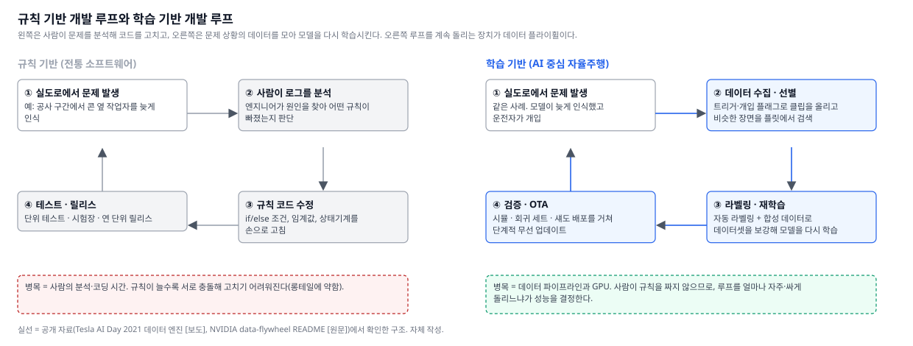
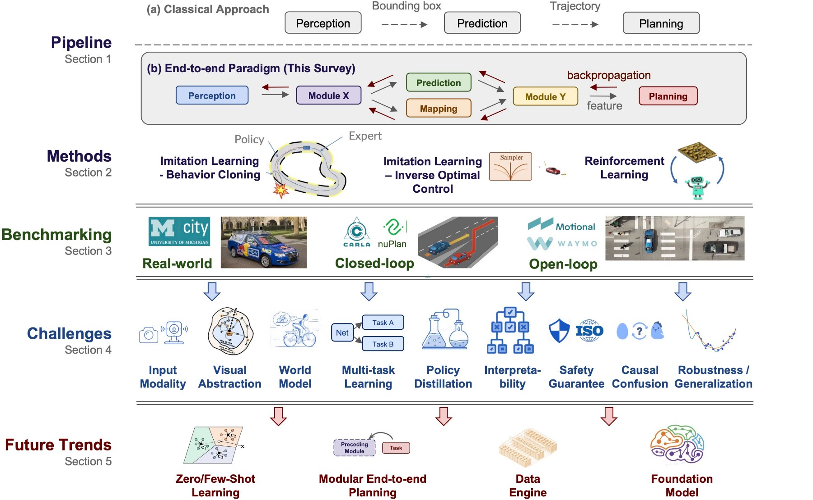
assets/overview.jpg, MIT. 크기만 줄임.1.3 기존 AI 학습 방식의 한계 (데이터 플라이휠이 주목받는 이유)
학습 기반 시스템은 규칙이 아니라 데이터로만 고칠 수 있다(1.2절). 그래서 문제는 "어떤 데이터가, 왜 부족한가"로 바뀐다. 아래 네 가지 한계가 그 답이다. 드문 상황이 사고를 좌우하고(롱테일), 장소가 바뀌면 성능이 떨어지며(분포 변화), 다시 학습하면 예전 능력이 지워지고(성능 회귀), 실도로 데이터만으로는 안전을 증명할 수 없다. 넷 다 "한 번 모은 데이터로 한 번 학습해 배포하는" 기존 방식으로는 풀리지 않는다. 이것이 데이터 플라이휠이 주목받는 이유다.
1.3.1 롱테일 문제
주행의 대부분은 평범하다. 직진, 차선 유지, 앞차 따라가기. 모델은 이런 상황을 금방 배운다. 문제는 드물게 일어나는 상황이다. 공사 구간에서 콘 옆에 서 있는 작업자, 갑자기 뛰어드는 동물, 비 오는 밤의 역광, 예측하기 어려운 사람의 행동. 이런 것을 롱테일(long tail) 이라고 부른다. 빈도 그래프를 그리면 오른쪽으로 길게 늘어진 꼬리처럼 각각은 드물지만 종류가 무한히 많다는 뜻이다.
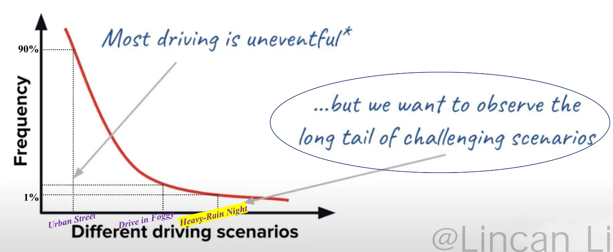
img_resource/1-1_Long_Tail_Distribution.png, Apache-2.0. 크기만 줄임.Waymo가 2025년 10월 공개한 WOD-E2E 데이터셋은 이 꼬리를 정면으로 겨눈다. 일상 주행에서 발생 빈도 0.03% 미만인 상황만 골라 4,021개 구간(약 12시간)을 모았고, 평가 지표도 "기록된 궤적과 얼마나 가까운가"가 아니라 "사람 평가자가 선호한 궤적에 얼마나 가까운가"(RFS, Rater Feedback Score)로 바꿨다 📰 (arXiv 2510.26125). 흔한 상황에서는 이미 잘하기 때문에 드문 상황에서만 모델 간 차이가 드러난다는 판단이다.
왜 드문 상황이 안전을 지배하는가. 안전 지표 자체가 드문 사건이기 때문이다. 미국에서 사람 운전자의 부상 신고 충돌은 100만 마일당 2.80건이다 📰 (Waymo 비교 연구). 100만 마일에서 세 번 남짓 일어나는 사건을 줄이려면, 100만 마일 중 99.99%를 잘하는 것으로는 부족하고 나머지 0.01%에서 무엇을 하는지가 결정한다. Elon Musk가 말하는 "9의 행진(march of nines)"도 같은 뜻이다. 신뢰도 99%에서 99.9%, 99.99%로 9를 하나씩 더 붙일 때마다 남은 예외 상황을 처리해야 하고, 그 예외가 곧 롱테일이다 📰 (보도).
1.3.2 데이터 분포 변화
한 도시에서 배운 모델을 다른 도시에 가져가면 성능이 떨어진다. 이것을 분포 변화(distribution shift) 라고 한다. 학습 데이터와 실제 데이터의 "분포"(어떤 상황이 얼마나 자주 나오는가)가 다르다는 뜻이다.
수치로 확인된 사례가 있다. Waymo Open Dataset 논문(2020)은 샌프란시스코 도심 데이터로 학습한 3D 차량 검출기를 교외(피닉스·마운틴뷰)에서 평가하면 정확도 지표(APH)가 8.0 떨어지고, 교외로만 학습한 보행자 검출기를 도심에서 평가하면 19.8 떨어진다고 보고하며 이를 "뚜렷한 도메인 갭"이라고 불렀다 📰 (arXiv 1912.04838). 보스턴(우측통행)과 싱가포르(좌측통행)를 함께 담은 nuScenes 데이터셋을 두고도 "장면·날씨·밤낮"이 바뀔 때 적응 없이는 성능이 크게 떨어진다는 연구가 여럿이다 📰 (BEVUDA, DA-BEV).
기업의 경험도 같다. Wayve는 영국(좌측통행)에서만 배운 모델을 미국에 그대로 가져갔을 때 처음에는 영국 수준에 못 미쳤고, 미국 데이터 100시간을 더하자 크게 좋아졌으며, 8주 동안 모은 500시간으로 영국 수준에 근접했다고 밝혔다 📰 (Wayve). 새 시장에 들어갈 때마다 그 시장의 데이터를 모아 넣어야 한다는 뜻이고, 이것이 플라이휠이 지역 확장의 도구가 되는 이유다.
1.3.3 성능 회귀
모델을 다시 학습시키면 새로 넣은 상황은 좋아지지만 예전에 잘하던 상황이 나빠질 수 있다. 학습 분야에서는 이를 파국적 망각(catastrophic forgetting) 이라고 부른다. 새 데이터에 맞춰 가중치를 바꾸다가 예전 지식이 덮어써지는 현상이다. 자율주행의 지속 학습에서도 보호 장치 없이 재학습만 하면 망각이 생긴다는 연구가 있다 📰 (IEEE).
그래서 플라이휠에는 회귀 테스트가 반드시 들어간다. Tesla의 Andrej Karpathy는 2021년 CVPR 발표에서 데이터 엔진 루프를 이렇게 설명했다. "섀도 모드로 배포 → 예측을 관찰 → 트리거를 조정해 새 데이터 수집 → 잘못된 예측을 '유닛 테스트'로 만들기 → 비슷한 예제를 데이터셋에 추가 → 재학습 → 반복". 당시 플릿에서 221개 트리거가 돌고 있었다 📰 (발표 요약). 틀렸던 상황을 테스트로 남겨 두면 다음 모델이 그 상황을 다시 틀리는지 확인할 수 있다. Waymo도 새 소프트웨어를 낼 때마다 "테스트 트랙·실도로·합성 시나리오 전부를 시뮬레이션에서 다시 실행"하고, 충돌 회피 시나리오는 상대 차량의 위치·속도를 조금씩 바꿔 가며(fuzzing) 돌린다 📰 (Waymo CAT).
1.3.4 실도로 데이터 확보와 안전성 문제
가장 근본적인 이유는 통계다. RAND 연구소의 2016년 보고서 "Driving to Safety"는 2013년 미국 교통사고 사망률(1억 마일당 1.09명)을 기준으로 이렇게 계산했다. 자율주행차가 사람보다 사망률이 낮다는 것을 95% 신뢰 수준으로 보이려면 무사고로 2억 7,500만 마일을 달려야 하고, "사람보다 20% 더 안전하다"를 95% 신뢰·80% 검정력으로 보이려면 110억 마일이 필요하다. 보고서의 결론은 "주행만으로는 안전에 도달할 수 없다(cannot drive their way to safety)"였다 📰 (RAND RR-1478).
실제 수치와 비교하면 감이 온다. Waymo는 2026년 3월 기준 무인(rider-only) 누적 2억 2,060만 마일을 달렸고, 1억 7,070만 마일 분석에서 사람 대비 중상 이상 충돌 92% 감소, 에어백 전개 83% 감소, 보행자 부상 92% 감소를 보고했다 📰 (Waymo Safety Impact). 독립 기관 IIHS의 분석은 부상 충돌 81% 감소로 조금 낮다 📰. 10년 가까이 세계에서 가장 많이 달린 회사가 이제 RAND의 첫 번째 문턱을 넘었을 뿐이다. Tesla는 FSD 누적 100억 마일을 공개했지만 충돌 집계 방식이 정부 데이터와 달라 독립 검증이 없다는 비판을 받는다 📰⚠️ (tesla.com/fsd/safety, 비판).
안전 표준도 같은 결론에 이른다. ISO 21448(SOTIF, 의도된 기능의 안전)은 주행 상황을 "알려짐/모름 × 안전/불안전"의 네 영역으로 나누고, "모르는 불안전 상황(unknown unsafe)"을 합리적 노력으로 최대한 줄이는 반복 과정을 요구한다. 그 주요 수단이 시뮬레이션을 포함한 광범위한 검증이다 📰 (Ansys SOTIF 해설).
그래서 Waymo는 실주행 2,000만 마일에 시뮬레이션 200억 마일 이상을 얹었고, 자체 시뮬레이터 Carcraft는 하루 800만~1,000만 마일을 달린다 📰 (Simulation City, CACM 2018). 2026년 2월에는 Google DeepMind의 Genie 3 기반 "Waymo World Model"로 플릿이 본 적 없는 상황(토네이도, 도로 위 코끼리)까지 만들어 시험한다고 밝혔다 📰 (Waymo 블로그).
1.4 지속적 closed-loop learning의 필요성
1.3절의 네 가지 한계를 정리하면 한 방향을 가리킨다.
| 압력 | 무엇이 문제인가 | 플라이휠이 하는 일 |
|---|---|---|
| 학습 모델 | 데이터 없는 상황은 못 푼다 | 실패한 상황의 데이터를 모아 다시 학습 |
| 롱테일 | 드문 상황이 사고율을 결정 | 드문 상황을 찾아내고 늘려서(합성) 학습 |
| 분포 변화 | 장소·날씨·차종이 바뀌면 성능 하락 | 새 시장 데이터를 빠르게 모아 적응 |
| 성능 회귀·검증 한계 | 새 모델이 예전 것을 잊고, 실주행으로는 증명 불가 | 회귀 테스트 세트와 시뮬레이션으로 배포 전 확인 |
이 네 가지를 한 번에 해결하는 방법은 하나다. 차에서 데이터를 모으고, 고쳐서, 시뮬레이션으로 확인하고, 다시 차에 보내는 루프를 계속 돌리는 것이다. 이 루프를 "데이터 플라이휠"이라고 부르든 "데이터 엔진"이라고 부르든 구조는 같다. 다음 장에서 그 구조를 펼친다.
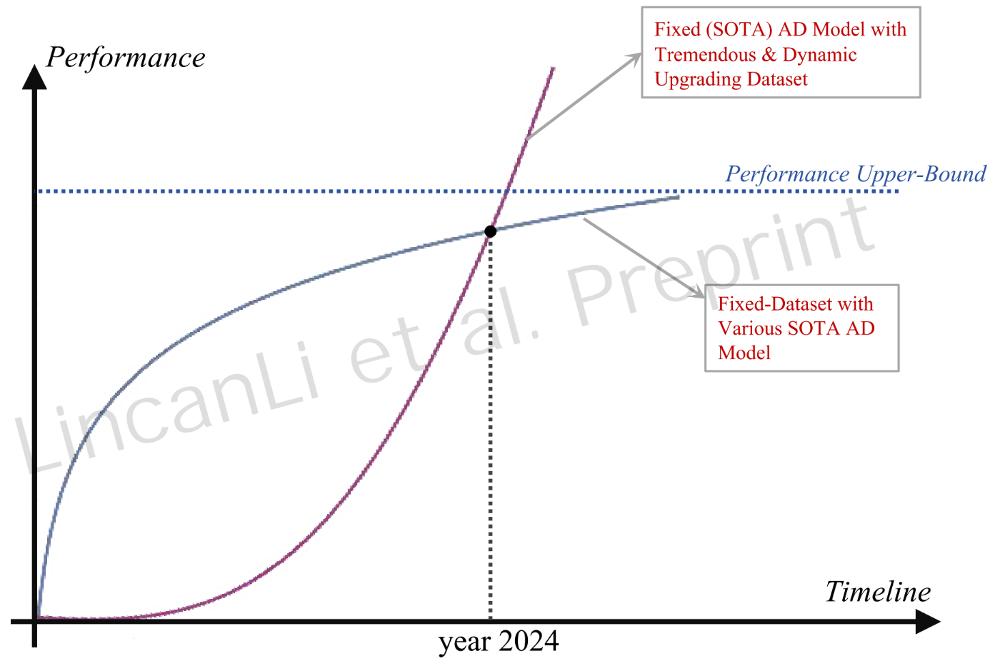
img_resource/1-2_Illustration-of-AD-Model-Performance-Upper-Bound.png, Apache-2.0. 크기만 줄임.2. 차량·클라우드·검증 환경을 연결하는 데이터 플라이휠 생태계
2.1 기준점 — 일반 AI 데이터 플라이휠
비교를 위해 먼저 "일반" 플라이휠을 본다. NVIDIA가 GitHub에 공개한 데이터 플라이휠 블루프린트는 정의를 이렇게 적는다. "데이터 플라이휠은 생산 애플리케이션의 데이터 배기가스(예: LLM 프롬프트·응답 로그, 사용자 피드백, 전문가 라벨)를 사용해 생성형 AI 시스템의 정확도를 높이고 지연·비용을 줄이는 프로세스다" 🔍 (data-flywheel README).
같은 문서가 "몇 시간 안에 자동으로 한다"고 설명하는 단계는 여섯 개다 🔍.
- 로그 저장소(Elasticsearch)에서 생산 데이터를 가져온다.
- 작업(task)별로 묶는다. 에이전트가 여러 일을 하면 노드마다 다른 작업이다.
- 중복을 없앤다.
- 클래스별 계층화 분할로 평가용·미세조정용 데이터셋을 만들어 데이터 저장소(NeMo Datastore)에 올린다.
- 미세조정 서비스(NeMo Customizer)로 작은 모델을 학습시킨다.
- 평가 서비스(NeMo Evaluator)가 "LLM-as-judge"(큰 모델이 채점자 역할)로 원래 모델과 비교한다.
승격은 자동이 아니다. README는 "플라이휠은 자동 조종 장치가 아니라 손전등"이라고 쓰고, 제한 사항 문서는 "이 플라이휠은 어떤 모델도 자동으로 승격·배포하지 않으며, 사용자 피드백도 받지 않는다"고 명시한다 🔍 (제한 사항, 구조 문서). 즉 여섯 단계는 후보를 찾아 점수를 매기는 데서 끝나고, 승격은 사람이 결정한다.
효과는 비용이다. README는 "NVIDIA 내부 실험에서 플라이휠로 추론 비용을 최대 98.6% 줄인 사례가 있다"고 쓰되, 바로 뒤에 "이런 사례는 에이전트가 소수의 도구 중 하나를 고르는 단순한 도구 호출 용도에 집중돼 있다"고 단서를 단다 🔍. 인사 챗봇에서 미세조정한 1B 모델이 70B 모델 정확도의 약 98%를 냈다는 것이 그 사례다. NVIDIA가 사내 지식 비서(직원 3만 명 이상 사용)에 같은 방식을 적용한 논문도 있다. 3개월간 부정 피드백 495건을 모아 라우팅 오류 5.25%를 찾아냈고, 라우터를 70B 모델에서 미세조정한 8B 모델로 바꿔 정확도 96%에 지연 70% 감소를 얻었다 📰 (arXiv 2510.27051).
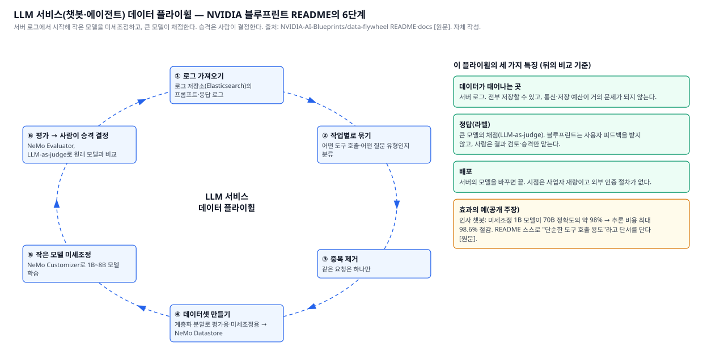
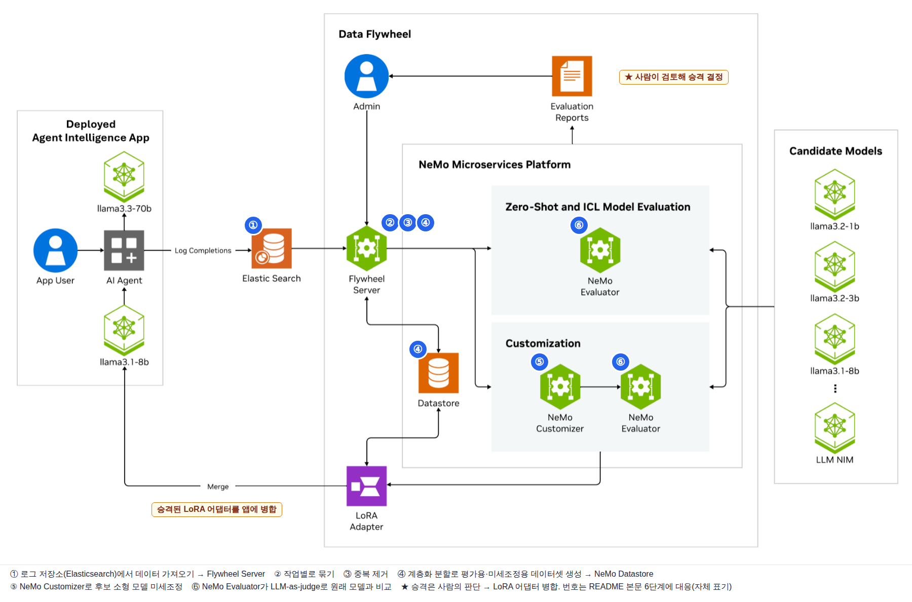
docs/images/data-flywheel-blueprint.png, Apache-2.0. 크기 축소 후 번호·범례를 덧그림(원본은 images/src-nvidia-data-flywheel-blueprint.png).일반 플라이휠의 특징을 세 줄로 적어 두면 뒤의 비교가 쉽다. 데이터는 서버 로그에서 공짜로 나온다. 정답(라벨)은 큰 모델의 채점이고, 사람은 결과 검토와 승격만 맡는다. 배포는 서버의 모델을 바꾸면 끝난다.
2.2 차량 데이터 플라이휠의 전체 구조
차량 플라이휠은 같은 원이지만 단계가 더 많다. 아래 구조는 세 종류의 공개 자료가 공통으로 말하는 것을 합친 것이다. Tesla가 2021년 AI Day에서 설명한 데이터 엔진 📰 (CleanTechnica), NVIDIA·AWS가 2026년 3월 설명한 "AV 3.0 데이터 파이프라인" 📰 (AWS 블로그, 본문은 요약만 확인·다이어그램은 그림 8), 그리고 Li et al. 2024 서베이(arXiv 2401.12888)의 7단계 폐쇄루프 🔍 (README 3.1절).
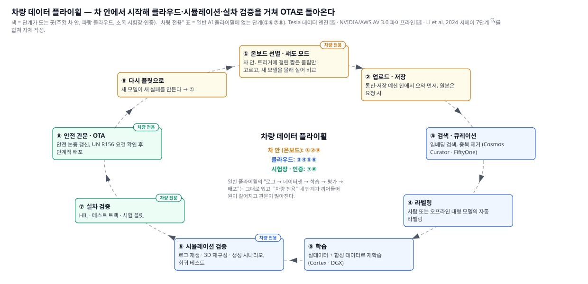
| 단계 | 어디서 | 무엇을 하나 | 대표 사례 |
|---|---|---|---|
| ① 온보드 선별 | 차 안 | 모든 데이터를 올릴 수 없으므로 "트리거"(조건)에 걸린 짧은 클립만 고른다. 새 모델을 몰래 실어 기존 모델·운전자와 비교하는 섀도 모드도 여기서 돈다 | Tesla 트리거 221개, 약 10초 클립 📰; openpilot은 카메라·CAN·GPS·IMU를 기본 업로드 🔍 |
| ② 업로드·저장 | 차 → 클라우드 | 통신비·저장비 예산 안에서 올린다 | Mobileye REM은 km당 약 10KB만 보낸다 📰; comma는 월 수백 TB 처리 📰 |
| ③ 검색·큐레이션 | 클라우드 | 수백만 클립에서 원하는 상황을 찾고 중복을 없앤다 | NVIDIA Cosmos Curator·Dataset Search 📰 |
| ④ 라벨링 | 클라우드 | 정답을 붙인다. 사람 또는 오프라인 대형 모델 | Tesla 자동 라벨링(주 1만 클립) 📰 |
| ⑤ 학습 | 클라우드 | 실데이터 + 합성 데이터로 재학습 | Tesla Cortex, NVIDIA DGX 📰 |
| ⑥ 시뮬레이션 검증 | 클라우드 | 로그 재생·3D 재구성·생성 시나리오로 폐루프 시험, 회귀 테스트 | Waymo 하루 800만~1,000만 시뮬 마일 📰 |
| ⑦ 실차 검증 | 시험장·시험 플릿 | HIL(하드웨어 인 더 루프)·테스트 트랙·시험 차량 | Waymo 테스트 트랙 + 실도로 📰 |
| ⑧ 안전 관문·OTA | 인증 → 차 | 안전 논증 갱신, 규제(UN R156) 요건 확인 후 단계적 배포 | Tesla v14.x 주 단위 OTA 📰 |
| ⑨ 다시 ① | 차 안 | 새 모델이 새 실패를 만든다 | — |
일반 플라이휠의 6단계 중 "로그 수집·데이터셋·학습·평가·배포"는 그대로 있다. 차량에서 새로 생긴 것은 ①(차 안 선별), ⑥(시뮬레이션이 필수), ⑦(실차), ⑧(안전 관문·규제)이다. 세 근거와 단계의 대응은 이렇다. 서베이의 7단계 "(I) 수집 → (II) 저장 → (III) 선별·전처리 → (IV) 라벨링 → (V) 학습 → (VI) 시뮬레이션·테스트 검증 → (VII) 실세계 배포"는 ②③④⑤⑥⑧에 해당한다. ①(온보드 선별·섀도 모드)은 Tesla 데이터 엔진에서, ⑦(실차 검증)은 Waymo 사례에서, ⑧의 안전 관문·UN R156은 규제 자료에서 더한 것이다.
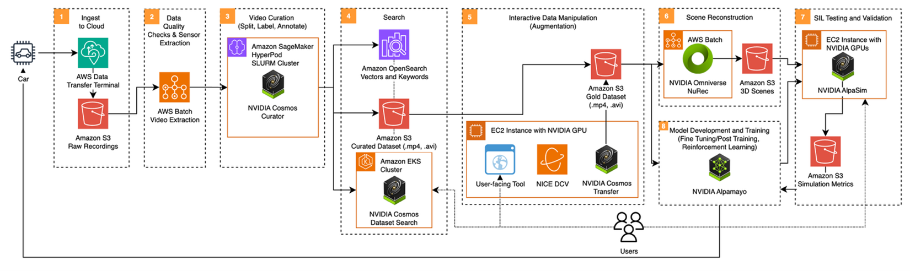
이 파이프라인은 클라우드 안쪽(수집 이후 → 학습 → 시뮬레이션)만 그리고, 차 안 선별·실차 검증·규제 관문은 없다. 그림 7의 ③~⑥을 도구 이름 수준으로 채운 그림으로 보면 된다. 사람(Users)이 검색과 증강 도구에 붙어 있는 점은 "사람이 고르고 만든다"는 3장의 3.2·3.4절 흐름과 같다.
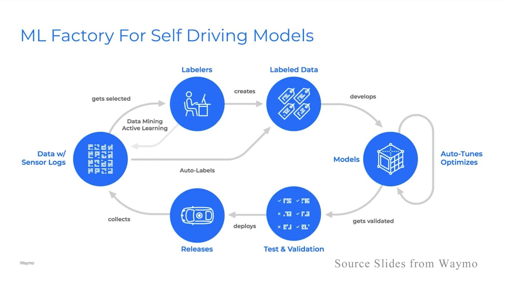
img_resource/3-2-2_Waymo_close_loop.png, 저장소 Apache-2.0). 원 저작권은 Waymo에 있다. 크기만 줄임.2.3 일반 AI 플라이휠과 다른 여섯 가지
2.1절의 일반 AI 플라이휠(챗봇·에이전트)과 2.2절의 차량 플라이휠을 같은 잣대에 놓으면, 차량 쪽에만 있는 조건이 여섯 가지 보인다.
| # | 차이 | 일반 AI(챗봇·에이전트) | 차량(자율주행) | 근거 |
|---|---|---|---|---|
| 1 | 데이터가 생기는 곳과 올릴 수 있는 양 | 사용자가 서버에 접속해 쓰므로 로그가 서버에 저절로 남고, 전부 보관해도 비용이 적다 | 데이터가 차 안 센서에서 생긴다. 카메라 원본은 시간당 수십 GB~수 TB라 통신 요금·저장비 때문에 전부 올릴 수 없고, 차 안에서 "올릴 만한 순간"을 골라야 한다(3.1절) | Tesla HW4 카메라는 시간당 약 20GB 생성(커뮤니티 추정 ⚠️); Mobileye REM은 km당 10KB만 보내도록 설계 📰; comma는 마일당 $0.003 미만으로 서비스 비용을 맞춤 📰 |
| 2 | 정답(라벨)의 성격 | 사용자 클릭·평점·큰 모델의 채점. 화면 안에서 끝난다 | 운전자 개입, 아슬아슬한 순간(니어미스), 충돌 같은 물리적 결과다. 3D 위치·속도처럼 사람이 눈으로 못 만드는 라벨이 많아 자동 라벨링이 필수다(3.2절) | Tesla 섀도 모드는 모델 출력과 운전자 행동을 비교 📰; NHTSA는 자율주행 충돌을 1~5일 안에 보고하게 함 📰 (SGO 2021-01) |
| 3 | 배포 앞의 안전 관문 | 평가 점수가 좋으면 바로 교체한다 | 새 모델이 "안전하다"는 논증(안전 케이스)을 표준에 맞춰 다시 써야 한다. ISO 26262(고장), ISO 21448(고장이 없어도 성능 한계로 생기는 위험), ISO/PAS 8800(AI 부품의 안전) | 📰 (UL 해설) |
| 4 | 소프트웨어 업데이트 자체가 규제 절차 | 하루에도 여러 번 서버의 모델을 바꾼다 | UN 규정 R156이 요구하는 것은 네 가지다. ① 제조사가 업데이트를 관리하는 체계(SUMS)를 인증받을 것 ② 모든 소프트웨어 버전에 식별 번호(RxSWIN)를 붙여 어떤 차에 어떤 버전이 실렸는지 추적할 것 ③ 업데이트가 인증받은 기능에 영향을 주면 다시 승인받을 것 ④ 업데이트 전에 대상 차량과 맞는지 확인하고, 주행 중 안전하게 설치하며, 사용자에게 알리고, 기록을 남길 것. EU는 2024년 7월부터 모든 신차에 적용한다. 즉 모델을 바꿔 내보내는 행위 자체가 인증 대상이라 "조용히 자주" 바꿀 수 없다 | 📰 (요약) |
| 5 | 시뮬레이터가 필수 | 실제 사용자 일부에게 새 모델을 보여 주는 A/B 테스트로 충분하다 | 위험한 상황을 실차로 반복할 수 없고, 실주행 거리로는 안전을 증명할 수 없다(1.3.4절). 시뮬레이션이 검증의 주 수단이다 | Waymo 실주행 2,000만 vs 시뮬 200억 마일 📰 |
| 6 | 개인정보의 범위와 데이터 주권 | 개인정보 규제(GDPR 등)를 똑같이 받지만, 데이터의 주인은 서비스에 가입하고 약관에 동의한 당사자이고, 데이터는 글·클릭이다 | 같은 규제를 받되 세 가지가 더 붙는다. ① 카메라가 동의한 적 없는 제3자(보행자·옆 차 운전자·번호판)를 찍는다. EU 개인정보 감독기구(EDPB)는 차 밖의 사람·번호판도 개인정보로 본다 📰 ② 주행 데이터에는 위치·이동 경로가 항상 붙는다 ③ 도로·건물·지형 영상은 지리정보로 취급돼 국가 안보 관점의 국외 반출 규제를 받는다. Tesla는 중국 도로 데이터를 미국으로 못 보내 상하이에 데이터센터와 학습 인프라를 따로 두었고, 한국은 원본 영상 학습을 규제 샌드박스로만 허용하며 국외 이전은 별개 심사다 | 📰 (EDPB 가이드라인 1/2020, Electrek 2026-02, 국내 보도, 머니투데이 2026-08) |
여섯 번째 차이에 대한 보충 — 얼굴·번호판은 일반 AI에도 있지 않나? 맞다. 챗봇 로그에도 개인정보가 들어가고 GDPR 같은 규제는 똑같이 적용된다. 차량이 다른 점은 데이터의 종류가 아니라 동의 구조·위치 결합·지리정보 규제 세 가지다. 챗봇 사용자는 약관에 동의한 당사자이지만, 차가 찍는 보행자와 옆 차 운전자는 동의한 적이 없다. 그래서 EDPB는 차 밖 데이터를 별도 항목으로 다루고 차내 처리(원본을 차 밖으로 내보내지 않는 것)를 권고한다 📰. 주행 영상은 언제·어디를 지났는지와 함께 기록되므로 얼굴을 가려도 이동 경로 자체가 개인정보가 된다. 그리고 도로·건물 영상은 지도 데이터와 같은 취급을 받는다. 중국은 차량 운행 정보의 국외 반출을 원칙적으로 금지하고 평가·보고를 거치게 하며 📰, 한국은 정밀지도 반출을 오래 제한해 왔고 자율주행 영상의 국외 이전은 개인정보위 심사 대상이다 📰. 여기서 딜레마가 생긴다. 얼굴·번호판을 흐리면 사람·차를 인식하는 학습에 쓸 정보가 사라진다. 한국이 "안전 조치를 조건으로 원본 그대로 학습"을 샌드박스로 허용한 이유다(5.5절).
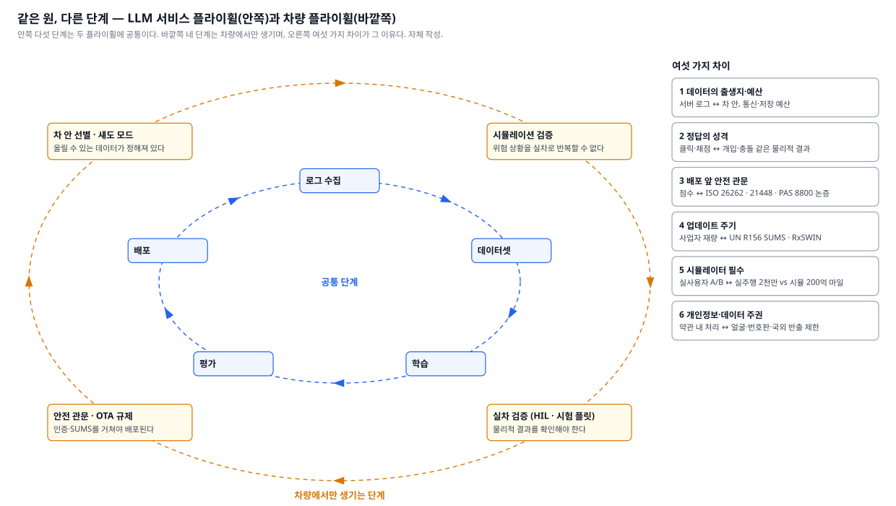
한 줄로 줄이면 이렇다. 일반 플라이휠은 "얼마나 빨리 도는가"의 문제이고, 차량 플라이휠은 "관문을 통과하면서도 계속 돌게 하는가"의 문제다. 2021년의 데이터 엔진이 2026년의 플라이휠로 어떻게 바뀌었는지는 5.1절에서 본다.
3. 데이터 플라이휠의 작동 방식과 핵심 기술
이 장은 핵심 기술을 네 묶음으로 나눈다. 데이터 수집·선별(차 안, 단계 ①②), 검색·라벨링(클라우드, 단계 ③④), 학습·합성 데이터(클라우드, 단계 ⑤), 검증·배포(단계 ⑥⑦⑧). 묶음마다 "왜 필요한가 → 핵심 기술 → 대표 사례 → 3.0절 가상 사례에 적용" 순서로 쓰고, 도구의 세부 설정은 생략한다.
| 묶음 | 단계 | 하는 일 | 핵심 기술 | 대표 사례 |
|---|---|---|---|---|
| 3.1 수집·선별 | ①② | 차 안에서 올릴 순간을 고르고 압축해 올린다 | 트리거, 섀도 모드, 두 단계 업로드 | Tesla 트리거 221개 📰, openpilot 🔍, 현대차 Hard Example Mining 📰 |
| 3.2 검색·라벨링 | ③④ | 비슷한 장면을 모으고 정답을 붙인다 | 임베딩 검색, 자동 라벨링, 사람 검수 | NVIDIA Cosmos 🔍, Tesla·Waymo 자동 라벨링 📰 |
| 3.3 학습·합성 데이터 | ⑤ | 모자란 장면을 만들어 학습한다 | 재생·재구성·생성, 폐루프 강화학습, 교사-학생 증류 | NVIDIA NuRec·Cosmos 🔍, Wayve GAIA 📰, openpilot 0.11 🔍, Waymo 📰 |
| 3.4 검증·배포 | ⑥⑦⑧ | 좋아졌는지 확인하고 차에 내보낸다 | 검증 사다리, 안전 케이스, UN R156 | Waymo 📰, Tesla 단계적 OTA 📰⚠️ |
3.0 따라갈 사례
가상 사례. 밤 10시, 비가 오는 편도 2차선 도로. 공사 구간이라 콘이 차선을 막고 있고, 콘 옆에 형광 조끼를 입은 작업자가 서 있다. 차의 모델은 콘은 일찍 봤지만 작업자를 늦게 인식했고, 운전자가 브레이크를 밟아 개입했다. 사고는 없었다.
이 상황은 롱테일의 전형이다. 밤 + 비 + 공사 + 서 있는 사람이라는 네 조건이 겹쳤고, 각각은 흔하지만 조합은 드물다. 각 절 끝의 "사례에서는"에서 이 클립 하나가 어떤 기술을 거쳐 모델을 고치는지 확인한다.
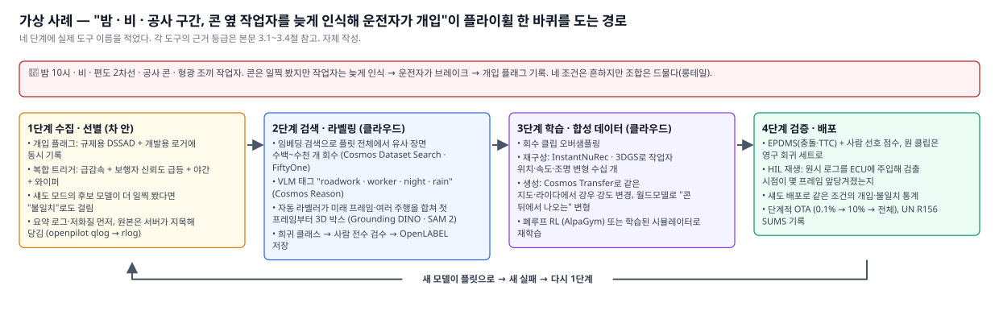
3.1 데이터 수집·선별 (차 안) — 단계 ①②
왜 필요한가. 차 한 대가 만드는 원본 데이터는 하루 수 TB 수준이다(Intel 2016년 추정 약 4TB, 최근 업계 추정 시간당 1~5TB 📰⚠️). 통신 요금과 저장비 때문에 전부 올릴 수 없으므로, 차 안에서 "올릴 만한 순간"을 고르고 고른 것도 압축해 올려야 한다.
기술 ① 트리거. "이 순간을 저장·업로드하라"고 판단하는 조건이다. 세 종류가 있다.
| 종류 | 무엇이 걸리게 하나 | 예 |
|---|---|---|
| 규칙 | 운전자 개입, 급제동, 충돌, 시스템 오류 | 규제(UN R157)도 시스템 켜짐·꺼짐·개입을 기록하게 한다 📰 |
| 모델 점수 | 차 안의 작은 모델이 "드문 장면" 점수를 매기거나, 두 모델의 판단이 갈릴 때 | Tesla 트리거 221개(2021) 📰; NVIDIA는 모델 여러 개의 불일치로 고른 데이터가 수동 선별보다 야간 보행자 검출을 3배 개선했다고 보고 📰 |
| 사람 | 운전자가 버튼을 누르거나 테스트 드라이버가 표시 | openpilot 북마크 🔍 |
기술 ② 섀도 모드. 새 후보 모델을 차에 싣되 운전은 시키지 않고 판단만 기록해 현행 모델·운전자와 비교한다. 두 모델의 판단이 갈리는 순간이 곧 "가치 있는 데이터"의 신호이므로 트리거이자 검증(3.4절)이기도 하다. Tesla는 FSD를 켜지 않은 차에서도 이렇게 비교한다 📰.
기술 ③ 두 단계 업로드. 요약본(핵심 신호 + 저화질 영상)을 먼저 올리고, 서버가 "이 구간이 흥미롭다"고 지목하면 그때 원본(전체 로그 + 고화질 영상)을 올린다. 오픈소스 openpilot이 실제로 이렇게 설계돼 있다 🔍. 주행을 1분 단위로 자르고, 요약본을 우선 업로드하며, 서버가 요청할 때 원본을 올리고, 저장 공간이 부족할 때만 오래된 것부터 지우되 운전자가 표시한 구간은 보존한다(코드 위치는 출처 절 참고).
대표 사례 한 줄씩. Tesla는 트리거 221개와 섀도 모드로 약 10초 클립을 모아 첫 데이터셋 100만 클립을 만들었다 📰⚠️. 현대차그룹은 "Hard Example Mining"으로 모델이 틀리거나 어려워한 상황을 자동 선별한다 📰. Mobileye는 원본 영상을 아예 올리지 않고 차 안에서 뽑은 차선·표지판 정보만 km당 약 10KB로 보낸다 📰.
사례에서는. 운전자가 브레이크를 밟는 순간 개입 트리거가 걸리고, 섀도 모델이 작업자를 더 일찍 봤다면 불일치 트리거도 걸린다. 요약본이 먼저 올라가고, 서버가 지목하면 원본이 올라간다. 올리지 않은 데이터는 저장·라벨링 비용이 0이므로 온보드 선별이 가장 싼 비용 절감이고(5.4절), 규제용 기록과 개발용 트리거가 같은 순간(개입)을 찍으므로 한 파이프라인으로 설계하는 것이 자연스럽다(5.6절).
3.2 검색·라벨링 (클라우드) — 단계 ③④
왜 필요한가. 클립 하나로는 모델을 못 고친다. 플릿 전체에서 비슷한 장면을 수백~수천 개 모아야 하고, 각 장면에 정답(물체 위치·차선·궤적)을 붙여야 학습에 쓸 수 있다.
기술 ① 임베딩 검색. 임베딩이란 영상(또는 글)의 내용을 요약한 숫자 목록이다. 뜻이 비슷한 영상은 숫자도 비슷하게 나오도록 만들어 두면, "비 오는 밤 공사 구간의 작업자"라는 글을 숫자로 바꿔 가까운 영상을 찾을 수 있다. 미리 조건을 코드로 써 둘 필요가 없고, 트리거에 안 걸렸던 "아슬아슬했던" 장면까지 회수할 수 있다는 것이 핵심이다. 대표 도구는 NVIDIA Cosmos Dataset Search(글로 영상 검색), Cosmos Curator(영상을 쪼개고 설명을 붙이고 중복을 없애는 파이프라인; 2,000만 시간 영상을 14일에 처리한다고 발표 📰), Voxel51 FiftyOne 🔍이다.
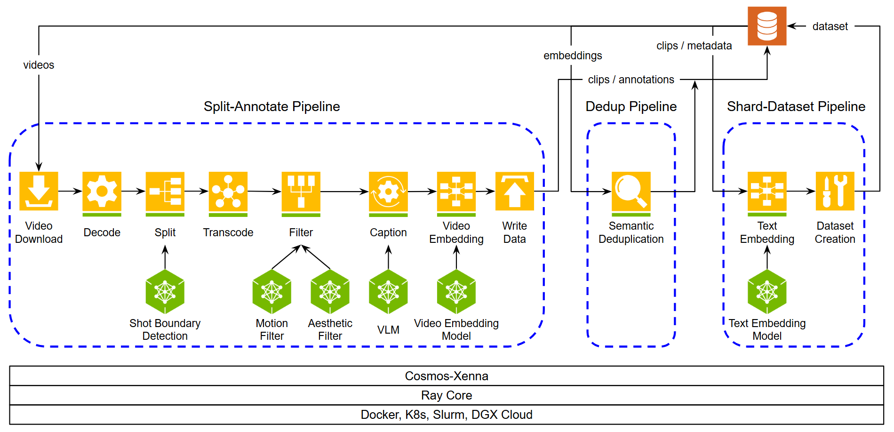
docs/assets/cosmos-curator-pipelines.png, Apache-2.0. 원본 크기.기술 ② 자동 라벨링 — 정답은 소급해서 붙인다. 차 안 모델은 현재 프레임까지만 보고 작은 모델로 빨리 답해야 하지만, 클라우드의 라벨러는 미래 프레임을 볼 수 있고, 여러 차의 주행을 합칠 수 있고, 훨씬 큰 모델을 쓸 수 있다. 그래서 "3초 뒤에 확실히 보인 그 사람"을 첫 프레임부터 거꾸로 라벨링할 수 있다. 콘 작업자 사례가 딱 이 경우다. Tesla는 여러 주행을 합쳐 3D + 시간으로 재구성한 뒤 자동 라벨링하며 1만 주행 기준 "수작업 500만 시간 → 12시간"을 주장하고 📰⚠️, Waymo는 라이다 시퀀스 전체로 만든 3D 박스가 사람 라벨과 대등하다고 보고했다(CVPR 2021) 📰. 오픈 도구로는 글로 지정한 물체의 박스를 그리는 Grounding DINO, 영상 전체의 물체 윤곽을 따라가는 SAM 2가 있다 🔍.
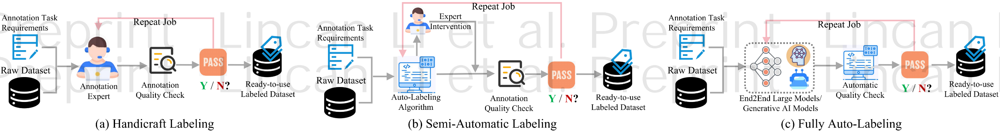
img_resource/3-5-Mainstream-AD-Labeling-Pipelines.png, Apache-2.0. 크기만 줄임.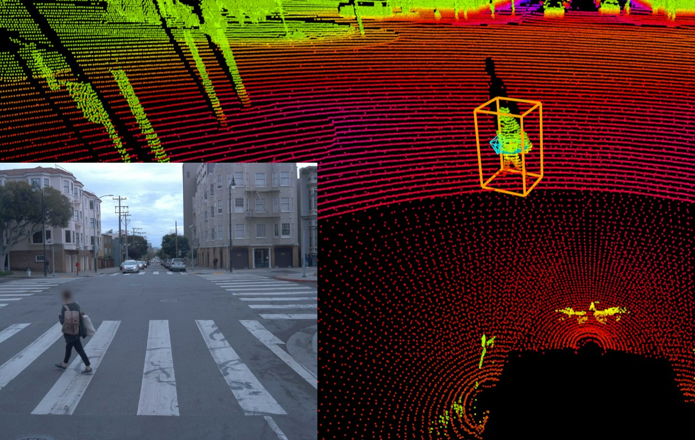
docs/images/pedestrian-3D-labeling-example.png(저장소 Apache-2.0, 데이터 자체는 Waymo Open Dataset 이용약관). JPEG로 변환.기술 ③ 사람은 검수로 옮겨간다. 자동 라벨 뒤에 사람이 일부(업계 관행 약 10%)를 무작위 검수한다 📰⚠️. 흔한 물체는 정확도가 높아도 드문 물체는 낮은 "착시"가 있으므로, 사례처럼 드문 물체는 전수 검수한다. 라벨 비용이 사람 수에서 GPU 시간으로 옮겨가되 검수 인력은 남는다는 뜻이다.
사례에서는. 클립을 임베딩해 플릿 전체에서 비슷한 장면을 찾고, 자동 라벨러가 미래 프레임을 합쳐 작업자의 3D 박스를 첫 프레임부터 만들며, 드문 물체이므로 사람이 전수 검수한다.
3.3 학습·합성 데이터 (클라우드) — 단계 ⑤
왜 필요한가. 모은 장면을 학습에 더 많이 넣는 것(오버샘플링)이 첫 방법이지만, "작업자가 콘 뒤에서 나오는" 변형이나 "비가 더 세게 오는" 변형은 플릿에 없다. 그래서 합성 데이터가 필요하고, 방법은 세 갈래다.
기술 ① 합성 데이터의 세 갈래.
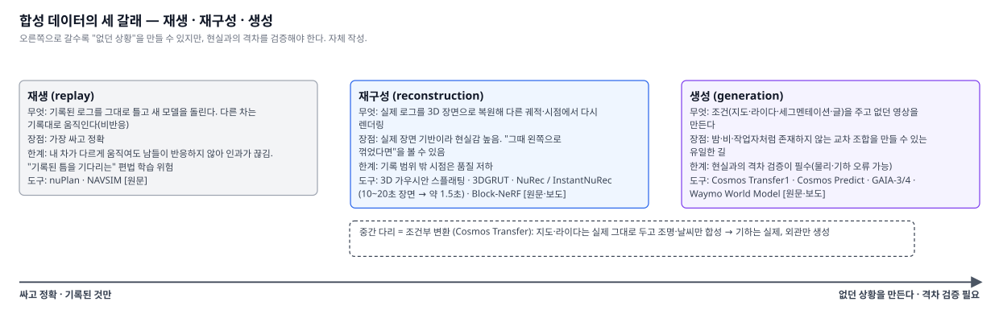
| 갈래 | 무엇을 하나 | 장점·한계 | 대표 도구 |
|---|---|---|---|
| 재생(replay) | 기록된 로그를 그대로 틀고 새 모델을 돌린다. 다른 차들은 기록대로만 움직인다 | 가장 싸고 정확하지만, 내 차가 다르게 움직여도 남들이 반응하지 않는다 | nuPlan, NAVSIM 🔍 |
| 재구성(reconstruction) | 실제 로그를 3D 장면으로 복원해 다른 궤적·시점에서 다시 그린다 | 실제 장면 기반이라 현실감이 높고 "그때 왼쪽으로 꺾었다면"을 볼 수 있다. 기록 범위 밖은 품질이 떨어진다 | 3D 가우시안 스플래팅 🔍, NVIDIA NuRec(10~20초 장면을 약 1.5초에 재구성) 🔍, Waymo Block-NeRF 📰 |
| 생성(generation) | 조건(지도·라이다·날씨)을 주고 없던 영상을 만든다 | 존재하지 않는 조합을 만들 수 있는 유일한 길. 현실과의 격차 검증이 필수 | NVIDIA Cosmos Transfer(기하는 그대로 두고 날씨·조명만 바꾼다) 🔍, Wayve GAIA-3 📰, Waymo World Model 📰 |
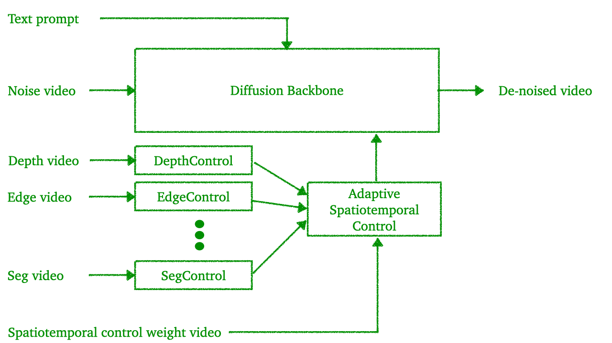
assets/transfer1_diagram.png, Apache-2.0. 원본 크기.기술 ② 폐루프 학습. 기록을 흉내 내는 학습(모방학습)만 하면 모델은 자기 실수의 결과를 겪어 보지 못한다. 시뮬레이터 안에서 모델이 직접 운전하고 그 결과(충돌·이탈)로 배우는 것이 폐루프 강화학습이고, 시뮬레이터 자체를 학습된 월드모델로 만들면 "학습된 시뮬레이터"가 된다. NVIDIA AlpaGym이 오픈 프레임워크로 공개됐고("초기 개발 단계") 🔍, comma.ai는 2026년 3월 "학습된 시뮬레이터로 전량 학습한" 모델을 실제 사용자에게 배포했다 🔍.
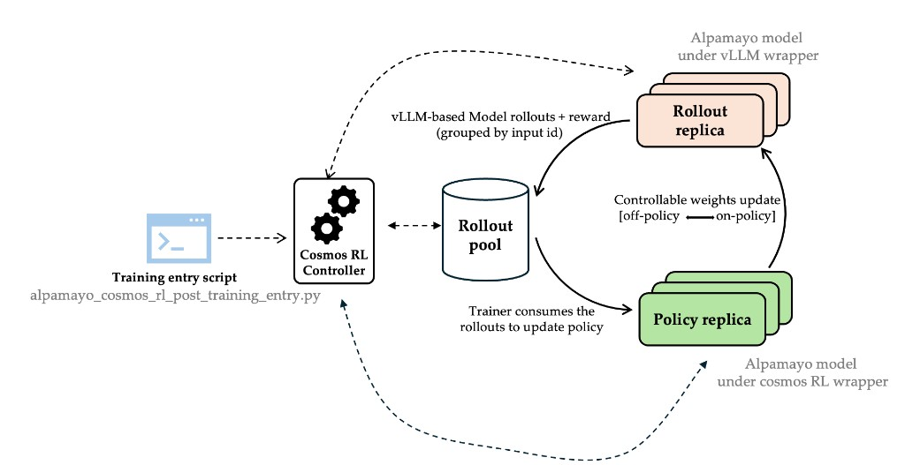
recipes/alpamayo1_x_rl/assets/alpamayo_rl_framework.png, Apache-2.0. 원본 크기.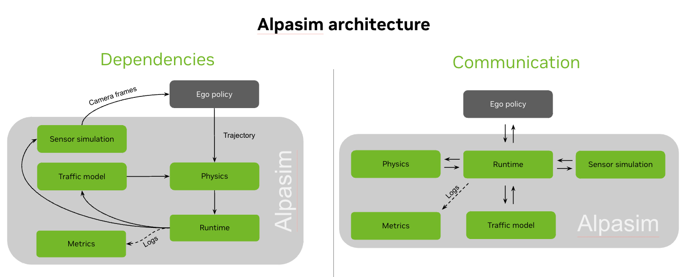
docs/assets/images/alpasim-architecture.png, Apache-2.0.기술 ③ 교사-학생 증류. 클라우드에서는 크기 제한 없는 "교사" 모델을 학습시키고, 차에는 실시간으로 돌 만큼 작은 "학생" 모델을 싣는다. 학생은 교사의 출력을 따라 배운다. Waymo는 하나의 파운데이션 모델이 운전자·시뮬레이터·평가자의 교사 역할을 하고, 증류한 학생 모델이 차에 실린다고 설명한다 📰.
사례에서는. 회수한 클립을 더 많이 학습에 넣고, 원 클립을 재구성해 작업자 위치·속도·조명을 바꾼 변형을 만들며, 생성 모델로 "콘 뒤에서 작업자가 나오는" 조합을 만든다. 재구성 장면 안에서 모델을 굴려 "더 일찍 감속"에 보상을 주고, 그 결과를 차에 실을 학생 모델에 증류한다. 재생 → 재구성 → 생성으로 갈수록 "없던 상황"을 만들 수 있지만 현실과의 격차 검증 부담이 커진다(5.3절).
3.4 검증·배포 — 단계 ⑥⑦⑧
왜 사다리인가. 가장 단순한 평가는 "기록된 궤적과 얼마나 가까운가"(개루프)다. 그런데 사례의 기록 궤적은 "늦게 본 운전자"의 궤적이므로, 그것과 가까울수록 좋은 점수를 준다면 늦게 보는 모델이 이긴다. 그래서 검증은 한 점수가 아니라 사다리처럼 올라가고, 각 단은 이전 단이 못 보던 것을 본다.
| 단 | 무엇을 보나 | 예 |
|---|---|---|
| 개루프 | 기록 궤적과의 거리 | ADE/FDE 같은 거리 지표 |
| 유사 폐루프 | 몇 초간 시뮬에서 충돌·차선 이탈·승차감을 점수화 | NAVSIM 🔍 |
| 사람 선호 | 드문 장면에서 사람 평가자가 고른 궤적과 얼마나 맞나 | Waymo WOD-E2E 📰 |
| 시뮬 폐루프 | 시뮬레이터 안에서 끝까지 운전 | Bench2Drive 🔍, 재구성·생성 시뮬 |
| 회귀 세트 | 예전 실패 사례를 전부 다시 통과하나 | Waymo는 사고 시나리오의 상대 차량 위치·속도를 조금씩 바꿔 가며 시험한다 📰 |
| 실차(HIL) | 기록한 센서 데이터를 실제 제어기에 넣어 본다 | dSPACE 📰, 현대모비스 시뮬레이터 60대 계획 📰⚠️ |
| 섀도 배포 | 새 모델을 운전시키지 않고 플릿에 실어 개입·불일치 통계를 본다 | Tesla 📰 |
| 단계적 OTA | 직원 → 소규모 → 광역 | Tesla v14는 플릿 0.1% 미만에서 시작 📰⚠️ |
마지막 단은 규제 절차다. UN R156은 소프트웨어 업데이트 관리체계(SUMS)를 인증 조건으로 요구한다. 버전마다 식별 번호를 붙이고, 대상 차량과 맞는지 확인하고, 안전하게 설치하고, 기록을 남겨야 한다. EU는 2024년 7월부터 모든 신차에 적용한다 📰. 안전 케이스 표준(UL 4600)은 분석·시뮬레이션·시험장·공도 시험을 조합해 안전을 논증하고 업데이트마다 갱신하라고 한다 📰. 배포가 곧 기록(DSSAD)으로 이어지므로 플라이휠의 마지막 단계는 자동으로 첫 단계에 연결된다.
사례에서는. 원 클립과 변형들을 폐루프 점수와 사람 선호로 채점하고, 원 클립을 영구 회귀 세트에 넣는다. 섀도로 배포해 같은 조건에서 개입률이 떨어지는지 확인한 뒤 0.1% → 10% → 광역으로 내보낸다. 새 모델이 다음 실패를 만들면 다시 3.1절이다. 검증은 사다리이고 마지막 단(OTA)은 규제 프로세스이므로, 개발 파이프라인과 인증 산출물을 함께 설계해야 한다.
3.5 단계별 처리량 — 공개된 숫자
| 단계 | 수치 | 근거 |
|---|---|---|
| ①② 차 → 클라우드 | Tesla 트리거 221개, 약 10초 클립, 첫 데이터셋 약 100만 클립·1.5PB(2021) | 📰⚠️ |
| ③ 큐레이션 | Cosmos Curator 2,000만 시간을 14일(Blackwell) | 📰 |
| ④ 자동 라벨링 | Tesla 1만 주행: 수작업 500만 시간 → 12시간(2022) | 📰⚠️ |
| ⑤ 재구성 | NVIDIA InstantNuRec 10~20초 장면 → 약 1.5초 | 🔍 |
| ⑥ 시뮬 검증 | Waymo 하루 1,000만 마일(2018), 누적 100억 마일(2019) | 📰 |
| ⑦ HIL | 현대모비스 60대 연결 시 주당 1만 시간(계획) | 📰⚠️ |
| ⑧ 배포 | Tesla 포인트 릴리스 1~2주 간격, 초기 롤아웃 0.1% 미만 | 📰 |
"트리거에서 배포까지 몇 주"라는 한 바퀴 소요 시간은 어느 회사도 공개하지 않았다 ⚠️. 자사 플라이휠을 설계한다면 이 "한 바퀴 시간"을 핵심 지표로 직접 재야 한다.
4. 기업별 데이터 플라이휠 전략과 최근 산업 동향
4.1 분석 틀 — 9단계를 누가 맡는가
회사를 "플릿형·로보택시형·공급자형" 같은 유형으로 나누면 "로보택시 회사니까 로보택시형"이라는 동어반복에 그친다. 대신 2.2절의 9단계(① 온보드 선별 ② 업로드·저장 ③ 검색·큐레이션 ④ 라벨링 ⑤ 학습 ⑥ 시뮬레이션 검증 ⑦ 실차 검증 ⑧ 안전 관문·OTA ⑨ 다시 ①)에 대고, 각 회사가 그 단계를 자체(●)로 하는지, 외부 도구·파트너(○)에 맡기는지, 둘을 섞는지(◐), 공개 자료로 확인되지 않는지(?)를 표시하면 차이가 드러난다. 공개 자료 기준이므로 "?"는 "안 한다"가 아니라 "밝히지 않았다"다.
| 기업 | 데이터 원천(플릿) | ① 온보드 선별 | ② 업로드·저장 | ③ 검색·큐레이션 | ④ 라벨링 | ⑤ 학습 | ⑥ 시뮬 검증 | ⑦ 실차 검증 | ⑧ 안전 관문·OTA |
|---|---|---|---|---|---|---|---|---|---|
| Tesla | 자기 양산차(FSD 140억 마일) | ● 트리거·섀도 | ● | ● | ● 자동 라벨링 | ● Cortex | ● 비공개 | ● 섀도·직원 플릿 | ● 주 단위 OTA |
| Waymo | 자기 로보택시(무인 2.2억 마일) | ● | ● | ● 데이터 마이닝·능동학습 | ◐ 자동+사람 | ● Foundation Model | ● Carcraft·World Model | ● 트랙+실도로 | ● 도시 단위 |
| 현대차그룹(42dot) | 테스트 차량 → 2026년 말 국내 양산차 | ● Hard Example Mining | ? | ? | ? | ● Continuous Training | ◐ 3D 재구성 + 모비스 HIL | ● | ◐ NVIDIA 트랙 / Atria 트랙 |
| Momenta | 남의 양산차(24 OEM·100만 대) | ● | ● OEM → Momenta 회수 | ● | ● | ● R6/R7 | ● 월드모델 | ○ OEM 프로그램 | ○ OEM 단위 |
| Mobileye | 남의 양산차(800만 대) | ● 의미 정보만 추출 | ● km당 10KB | ● | ● | ● | ● True Redundancy(주장) | ○ OEM | ○ OEM 단위 |
| Wayve | 자체 시험 플릿 + 파트너(Nissan) | ● | ● | ? | ? | ● GAIA 안에서 | ● GAIA-3/4 | ◐ | ○ 파트너 단위 |
| XPeng | 자기 양산차(1억 클립) | ● | ● | ● | ● | ● | ● X-World | ● | ● |
| Baidu Apollo Go | 자기 로보택시(2,300만 회 탑승) | ● | ● 탈민감화 | ● | ● | ● ADFM | ● OpenX 시나리오 | ● | ● |
| comma.ai | 사용자 양산차(3억 마일) | ● 요약본 우선 업로드 | ● 서버 지목 시 원본 | ? | ? | ● | ● 학습된 시뮬레이터 | ● 사용자 플릿 | ● 약 2개월 |
| NVIDIA(플랫폼) | 자기 플릿 없음(Uber 10만 대 계획) | ○ DRIVE 칩·Hyperion 센서 세트 제공 | — | ● Cosmos Curator·Dataset Search | ● Cosmos Reason·Alpamayo | ● Alpamayo·Cosmos-RL | ● NuRec·Transfer·AlpaSim | — | — |
각 칸의 근거는 4.2~4.7절의 회사별 서술에 적었다. Tesla·Waymo·Momenta·Mobileye·XPeng·Baidu는 📰(회사 발표·보도), comma.ai·NVIDIA는 🔍(저장소 원문), 현대차그룹은 📰(2026-09 미디어데이 보도)다.
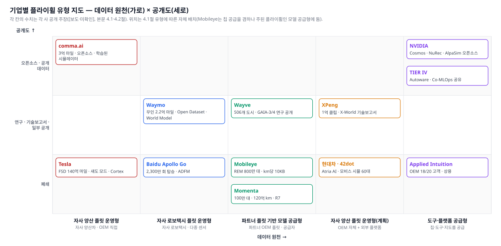
4.2 Tesla — 플릿이 곧 센서이고, 9단계를 전부 안에서 돌린다
플라이휠이 도는 순서. ① FSD를 켜지 않은 차에서도 백그라운드에서 판단을 내려 실제 운전과 비교하는 섀도 모드가 돌고, 2021년 기준 221개 트리거가 "이 순간을 올려라"를 판단한다 📰 (Karpathy CVPR'21 요약). ② 걸리면 약 10초 클립을 올린다. 2021년 첫 데이터셋이 100만 클립·1.5PB였고, 2026년 FSD 누적 주행은 140억 마일이다 📰⚠️ (Electrek). ③④ 여러 차의 주행을 합쳐 4D(3D + 시간)로 재구성한 뒤 차선·객체 라벨을 자동으로 만들고, 1만 주행 기준 "수작업 500만 시간 → 클러스터 12시간"을 주장한다 📰⚠️. 2022년 자체 라벨팀을 감원한 것이 자동화의 뒷면이다 📰. ⑤ 학습 클러스터 Cortex는 2026년 1분기 "H100 상당 10만 장 이상"이고 Cortex 2가 추가됐다 📰⚠️ (TechCrunch). v14.3 릴리스 노트에는 "강화학습 단계"가 등장한다 📰⚠️. ⑥ 시뮬레이터는 비공개다. 2026년 보도는 "실도로 데이터 → 자동 라벨링 → 신경망 시뮬레이터 → 강화학습 → 새 모델 → 플릿 검증"의 루프를 전한다 📰⚠️ (Not a Tesla App). ⑦⑧ 여러 라운드 섀도 후 활성화하고, 플릿 0.1% 미만 → 약 10% → 광역으로 내보낸다. 대형 버전은 약 10개월(v13 → v14), 포인트 릴리스는 1~2주다 📰⚠️.
구조의 특징. 첫째, 플릿이 ①·②·⑦을 동시에 맡는다. 같은 양산차가 데이터 수집기이자 섀도 검증 장치이자 단계적 배포 대상이다. 로보택시형과 가장 다른 점이다. 둘째, 라이다가 없으므로 정답(④)을 카메라 다중 주행 재구성으로 만들어야 한다. 자동 라벨링에 GPU 4,000장을 따로 둔 이유다(2022) 📰⚠️. 셋째, 데이터 주권이 플라이휠을 둘로 쪼갠다. 중국 도로 데이터를 미국으로 못 보내 상하이 데이터센터와 중국 내 학습 인프라를 따로 두었고, 중국 당국의 데이터 안전 검사를 외자 기업 최초로 통과했다 📰 (Electrek 2026-02, 이투데이). 약점은 충돌 집계 방식이 정부 데이터와 달라 안전 통계의 독립 검증이 없고 📰⚠️, 데이터·시뮬레이터·모델이 모두 비공개라 외부가 검증할 수 없다는 것이다.
4.3 Waymo — 하나의 파운데이션 모델이 운전자·시뮬레이터·평가자를 겸한다
플라이휠이 도는 순서. ①② 로보택시 플릿(2026년 3월 무인 누적 2억 2,060만 마일, 주 400만 마일 이상)이 카메라·라이다·레이더 로그를 만든다 📰 (Waymo). ③ "ML Factory" 슬라이드(그림 9)가 보여 주듯 센서 로그를 데이터 마이닝·능동학습으로 선별한다 📰. ④ 라이다 시퀀스 전체를 쓰는 3D 자동 라벨링(CVPR 2021)이 사람 라벨과 대등하고 📰, 초기의 사람 라벨링에서 자동 라벨링으로 이동했다고 밝혔다 📰 (Scale 블로그). ⑤ Waymo Foundation Model(Gemini 계열 기반)을 크기 제한 없는 "교사"로 학습시키고, 차에 실을 "학생" 모델로 증류한다 📰 (Waymo 블로그 2025-12). ⑥ 같은 파운데이션 모델이 시뮬레이터(Genie 3 기반 Waymo World Model, 카메라·라이다 동시 생성)와 평가자(Critic)의 바탕이 된다 📰. Carcraft는 하루 800만~1,000만 마일을 달리고, 새 소프트웨어마다 전체 시나리오를 재실행하며 사고 시나리오는 fuzzing한다 📰. ⑦⑧ 테스트 트랙과 실도로를 거쳐 도시 단위로 롤아웃하고, 플릿 통계를 안전 허브와 동료 심사 논문으로 공개한다(중상·사망 충돌 94% 감소 등) 📰.
구조의 특징. "운전자·시뮬레이터·평가자가 같은 모델"이라는 설계가 핵심이다. 한 모델이 좋아지면 세 단계(⑤, ⑥, ⑧의 평가)가 함께 좋아지는 구조이고, Waymo는 이를 "지속적 선순환(flywheel)"이라고 스스로 부른다 📰. 플릿은 작지만 센서 밀도가 높다. 라이다가 있어 3D 정답을 만들기 쉽고, 그 대신 플릿 규모(Tesla의 1/60 수준)를 시뮬레이션(실주행 2,000만 vs 시뮬 200억 마일)으로 보충한다 📰. 공개도는 가장 높다. Waymo Open Dataset·WOD-E2E(롱테일 데이터셋)·안전 케이스 백서·안전 허브를 냈고 📰, 2026년 8월에는 한국에서 모은 사고·사건 장면을 가명 처리해 국외로 가져가는 절차를 개인정보위에 문의했다 📰 (머니투데이 2026-08).
4.4 현대차그룹 — 42dot·모비스·NVIDIA·Motional의 분업으로 도는 두 개의 트랙
발표 내용. 2026년 9월 11일 미디어데이(9월 13일 보도)에서 현대차그룹은 "차량에서 실제 주행 데이터를 확보하고 이를 AI 모델 학습과 검증에 활용한 뒤, 개선된 AI 모델을 다시 차량에 적용해 새로운 데이터를 확보하는 선순환 구조"를 자율주행 전략의 핵심 엔진으로 선언했다 📰 (현대차그룹, 오토일렉트로닉스, 네이트 뉴스).
플라이휠이 도는 순서(공개된 범위). ① Hard Example Mining은 AI 모델이 오인식하거나 판단하기 어려워하는 주행 상황(엣지 케이스)을 자동으로 선별해 우선 학습에 쓰는 기술로 📰, 3.1절의 "모델 점수 트리거"에 해당한다. ② 데이터 원천은 세 겹이다. (a) 42dot의 종단간 시스템 Atria AI를 실은 SDV 테스트 차량 — 2026년 9월 서울 도심에서 비보호 좌회전 등을 무개입으로 주행하는 영상을 공개했다 📰 (한국경제TV). (b) 2026년 말부터 국내 양산차에 Atria AI를 실어 엣지 케이스를 수집하고, 국토부와 협력해 전남·광주에 "SDV Pace Car"를 투입한다 📰. (c) 장기적으로 190여 개국 연 700만 대 판매망을 데이터 확보 기반으로 삼겠다는 계획이다 📰 (지피코리아). ⑤ Continuous Training 파이프라인이 실제 차량 평가에서 발견된 취약점을 새 학습 데이터로 반영해 모델을 반복 개선한다 📰. ⑥ 실제 주행 데이터를 3차원 환경으로 재구성해 위험하거나 반복하기 어려운 상황을 가상으로 재현하고 검증한다 📰(3.3절의 "재구성" 갈래). 현대모비스는 실차 센서 데이터를 시뮬레이터에 통합한 검증 체계를 발표하고, 시뮬레이터 60대 연결 시 "1만 시간 검증을 1주일에"를 목표로 한다(계획) 📰⚠️ (PR Newswire). ⑧ 이중 트랙이다. NVIDIA DRIVE AGX Thor·Hyperion 기반 L2+/L2++ 양산이 2028년 상반기, 자체 Atria AI 기반 L2++ 양산이 2029년 하반기 목표이고 📰, L4는 Motional을 통해 진행한다 📰(2026-03 GTC 발표).
구조의 특징. 첫째, 단계별로 담당 주체가 다른 "그룹 내 분업"이다. 42dot은 모델(Atria AI)과 선별(Hard Example Mining), 현대모비스는 센서·HIL 검증, NVIDIA는 양산 플랫폼과 검증 도구, Motional은 로보택시 데이터의 별도 루프를 맡는다. Tesla처럼 한 조직이 9단계를 쥔 구조가 아니다. 둘째, 플라이휠이 두 개 병렬로 돈다. NVIDIA 트랙(2028)과 Atria 트랙(2029)이 각각 양산되는데, 두 트랙의 데이터가 한 저장소로 합쳐지는지, 라벨링(④)·검색 도구(③)를 자체로 하는지 외부 도구인지는 공개 자료에 없다 ⚠️. 셋째, 출발 시점이 다르다. 현재 수집 차량은 테스트 차량 위주이고 양산차 탑재는 2026년 말부터다. 4.1절 표의 플릿형(Tesla·XPeng·Momenta)에 비해 ①②가 늦게 시작되며, 700만 대 판매망은 "잠재력"이지 아직 플릿이 아니다. 대신 국내 원본 영상 학습은 규제 샌드박스 승인에 묶여 있어(5.5절) 수집 자체가 제도 조건이다.
비교 대상으로 Toyota·Woven의 Arene은 동의 기반 주행 데이터 수집(Arene Data)과 가상 검증(Arene Tools)을 2025년 RAV4부터 적용하고 📰, VW는 Bosch와의 얼라이언스에 약 15억 유로를 쓴 뒤 2026년 7월 조기 종료해 OEM 자체 구축의 실패 비용을 보여 줬다 📰 (electrive).
4.5 Momenta·Mobileye·Wayve — 남의 차에서 데이터를 받는 세 가지 방식
Momenta — OEM 양산차에서 공급자로 돌아오는 플라이휠. ①② 데이터 원천은 24개 OEM(BMW 중국·아우디·도요타·BYD·포드 등)의 양산차 100만 대 이상이다 📰 (Momenta). 상장 서류는 "양산차가 실도로 데이터를 모으고 → 알고리즘이 좋아지고 → 더 많은 양산차에 실리고 → 더 많은 데이터가 생기는" 폐루프를 사업 모델로 명시한다 📰 (Longbridge). ⑤ R6 "플라이휠 대형 모델"은 고가치 클립 7,000만 개와 실주행 30억 km로 학습한 강화학습 기반 종단간 모델로 2025년 8월 Buick Electra L7에 처음 실렸고 📰 (Momenta R6), R7(2026-04)은 사전학습·시뮬레이션·강화학습 3층 구조에 누적 120억 km와 "골든 데이터" 1억 건을 쓴다 📰. ⑦⑧ 실차 검증과 배포는 OEM 프로그램 단위(세대 연 1회)로, Momenta가 직접 OTA를 쥐지 않는다 📰. 특징은 플라이휠의 주인은 공급자, 플릿의 주인은 OEM이라는 점이다. 어떤 데이터가 얼마나 OEM에서 Momenta로 돌아오는지(계약 조건)는 비공개이고 ⚠️, Mercedes 중국 CLA·BMW 중국 iX3처럼 "중국 안에서만" 돌아오는 지역 한정 회수가 많다 📰.
Mobileye — 모델이 아니라 지도가 돌아오는 플라이휠. ①② 18개 브랜드·50개 차종·800만 대 이상의 양산 ADAS 차량이 원본 영상 대신 차 안에서 뽑은 의미 정보(차선·표지판·평균 속도 등)를 km당 약 10KB로 전송한다(REM) 📰 (Mobileye REM). 누적 출하 EyeQ는 1억 7,000만 개다 📰 (CES 2026 프레스 킷). ③④⑤ 이를 모아 10cm 정확도의 "Roadbook" 지도를 만들고 공사 구간 같은 변화를 갱신하며 📰, ⑧ 산출물(지도)이 다시 차량으로 내려간다. 모델 배포는 OEM 프로그램 단위다 📰. 특징은 원본 영상을 올리지 않으므로 대역폭·개인정보·데이터 주권 문제를 설계로 비켜간다는 것이다. 대신 영상 기반 종단간 학습에 쓸 원본 데이터는 이 경로로 모이지 않는다(⚠️ 추정). 검증은 "True Redundancy"(카메라 계열과 레이더·라이다 계열 독립 운영)로 필요한 데이터 양을 줄인다고 주장한다 📰.
Wayve — 월드모델이 곧 상품인 플라이휠. ①② 자체 시험 플릿(영국 → 미국 → 일본)과 파트너(Nissan)에서 데이터를 얻는다 📰. 영국에서만 배운 모델에 미국 데이터 100시간을 더해 크게 개선했고 8주 500시간으로 영국 수준에 근접했다(1.3.2절) 📰. ⑤⑥ 월드모델 GAIA가 학습과 검증을 함께 맡는다. GAIA-3(2025-12)는 150억 파라미터·이전 세대 10배 데이터로 학습해 검증용으로 외부 제공하고, GAIA-4(2026-08)는 AI Driver를 루프 안에 넣어 기록된 장면에서 출발하는 반사실 시나리오를 만든다 📰 (Wayve). ⑧ Nissan LEAF 기반 로보택시로 2026년 말 도쿄 Uber 파일럿을 계획한다 📰. 단일 모델로 유럽·북미·일본 506개 도시를 주행하고 그중 43%는 현지 데이터 없이라는 주장 📰⚠️은 플라이휠의 산출물이 "지역별 모델"이 아니라 "일반화된 하나의 모델 + 검증용 월드모델"이라는 뜻이다. 검증 도구(GAIA-3)를 외부에 파는 것은 4.7절의 툴체인과 겹친다.
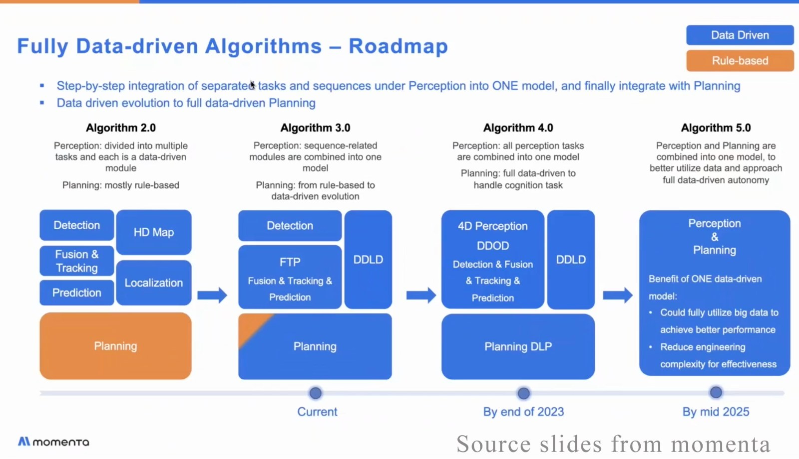
img_resource/3-1_momenta_data_driven_planning.png, 저장소 Apache-2.0). 원 저작권은 Momenta에 있다. 크기만 줄임.4.6 XPeng·Baidu·comma.ai — 자체형의 극단, 로보택시의 폐쇄루프, 오픈소스의 창
XPeng은 OEM이 ①~⑧을 전부 쥔 "Tesla형"의 중국판이다. 자기 양산차에서 롱테일 클립 약 1억 개를 모으고, 학습비 20억 위안 이상을 쓰며, 제어 가능한 생성 월드모델 X-World를 폐루프 시뮬·온라인 강화학습·데이터 합성에 통합해 VLA 2.0(2026-Q1)을 냈다고 밝힌다 📰⚠️. 월드모델을 ⑤와 ⑥ 양쪽에 쓰는 점이 특징이다.
Baidu Apollo Go는 합규 데이터 수집(차량 개조·탈민감화) → 처리·관리 → 라벨링 → 학습·평가 → 시나리오 라이브러리(OpenX 표준)·시뮬 → 차량 배포·OTA의 폐쇄루프를 그림으로 공개했다(그림 21). 그림의 수집 단계에 "탈민감화(개인정보 제거)"가 명시된 것이 중국 규제의 반영이다. 6세대 RT6에 파운데이션 모델 ADFM을 싣고, 2026년 2분기 완전 무인 탑승 약 100만 회, 6월 누적 2,300만 회를 기록했으며 📰 (Baidu 6-K), 2026년부터 Lyft와 독일·영국에 진출한다 📰.
comma.ai openpilot은 플릿형 플라이휠의 진화를 릴리스 노트와 코드로 확인할 수 있는 유일한 창이다. 사용자 2만 명·3억 마일에서 요약본을 먼저 올리고 원본은 서버가 지목할 때 올리며(검색·라벨링 방식은 비공개), 월드모델(2B, 250만 분)로 학습된 시뮬레이터를 만들어 그 안에서 전량 학습한 모델을 2026년 3월 0.11에 배포했으며, 약 2개월마다 릴리스하고 사용자 플릿이 검증한다. 흐름은 2025-08 "MPC → 월드모델 종단간" → 2025-09 "4배 세그먼트" → 2026-03 "학습된 시뮬레이터 전량 학습" → 2026-08 "880M 대형 모델"이다 🔍 (RELEASES.md); 2B·250만 분은 📰.
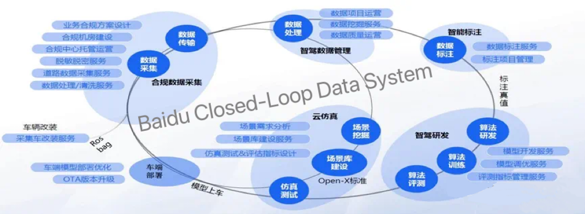
img_resource/3-2-4_Baidu_Close_Loop_Data_System.jpg, 저장소 Apache-2.0). 원 저작권은 Baidu에 있다. 원본 크기.4.7 단계를 부품으로 파는 회사들 — 어느 단계를 파는가
자기 플릿 없이 플라이휠의 특정 단계를 도구·서비스로 파는 회사들이 있다. OEM·공급자가 4.1절 표에서 "○"로 표시한 칸을 이들이 채운다.
| 회사 | 파는 단계 | 무엇을 파나 | 근거 |
|---|---|---|---|
| NVIDIA | ①⑧(칩) + ③④⑤⑥(도구) | 차 안: DRIVE AGX Thor 칩·Hyperion 참조 센서 세트. 클라우드: Cosmos Curator(큐레이션·주석) → Cosmos Transfer(날씨·조명 변형으로 희소 시나리오 증폭) → Cosmos Reason/Evaluator(물리 정확성 자동 점수) → OSMO 오케스트레이션의 "Physical AI Data Factory Blueprint"(2026-03). 오픈 자산: Alpamayo(100억 파라미터 추론형 VLA, 1,700시간 이상 공개 주행 데이터), Alpamayo 2 Super(340억), AlpaSim·AlpaGym, Omniverse NuRec. Uber·Skild AI 채택, Hyperion 기반 Uber L4 10만 대(2027~) | 📰🔍 (NVIDIA 뉴스룸) |
| Applied Intuition | ⑥⑦ + 데이터 관리 | 시뮬레이션·테스트 도구. 2025년 6월 기업가치 150억 달러에 6억 달러 조달, 상위 20개 OEM 중 18개가 고객, 시뮬·테스트가 매출의 약 1/3이라는 추정 | 📰⚠️ (Sacra) |
| Voxel51 | ③ | 페타바이트급 플릿 로그에서 임베딩·자연어 검색으로 엣지 케이스를 캐고 NuRec과 연동(FiftyOne 오픈소스) | 📰🔍 |
| Scale AI | ④(사람) | 사람 라벨링(인력 24만 명). 2025년 6월 Meta의 143억 달러 투자 뒤 고객 이탈·감원, 자율주행 라벨링 비중은 2022년 이후 줄어 LLM 데이터로 이동 | 📰 |
| Bosch Engineering | ④(자동) | 신경망 자동 라벨링으로 3D 박스 비용 최대 70% 절감 주장 | 📰⚠️ (Bosch) |
| Foretellix | ⑥ | 시나리오 커버리지 도구 Foretify. 2025년 10월 NVIDIA DRIVE AV에 통합 | 📰 |
| dSPACE | ⑦ | HIL 재생 시스템(ESI + SCALEXIO, 카메라·레이더·라이다·CAN·이더넷 동기 주입) | 📰 |
| TIER IV Co-MLOps | ②③④ 공유 + ⑧(Autoware) | 2024년 출범한 다사 데이터 공유 플랫폼. 2026년 8월 Astemo와 양산급 종단간 모델 공동 개발 MoU. "사람은 요구사항만 정하고 AI 에이전트가 라벨링·정제·학습·평가를 자율 수행" 주장 | 📰⚠️ (TIER IV) |
| 표준·데이터 스페이스 | 단계 사이의 형식 | ASAM OpenSCENARIO DSL 2.2(2026-03)·OpenLABEL·OpenODD; Catena-X는 2026년 11월 중국–유럽 간 첫 국경 간 자동차 데이터 생태계 운영 발표 | 📰 |
읽히는 것은 분명하다. 팔리는 단계는 ③④⑥⑦(검색·라벨링·시뮬·HIL)에 몰려 있고, ①⑤⑧(온보드 선별·학습·배포 책임)은 도구로 팔리지 않는다. 사람 라벨링(Scale AI)이 줄고 자동 라벨링·큐레이션 도구(NVIDIA·Bosch·Voxel51)가 느는 것이 2022년 이후의 이동이다.
4.8 회사들을 가로지르는 공통점과 갈림길
공통점은 셋이다. 첫째, 모두가 직접 쥐는 단계는 ①·⑤·⑧이다. 온보드 선별(무엇을 올릴지), 학습(모델 자체), 배포 책임(규제·안전 케이스)은 어느 회사도 외부에 맡기지 않는다. 반대로 ③④⑥(검색·라벨링·시뮬 도구)은 사거나 열어 쓴다. 차별화와 법적 책임이 있는 자리만 안에 두는 셈이다. 둘째, 라벨링(④)은 "사람 외주"에서 "자동 라벨링 + 사람 검수"로 옮겨간다. Tesla 라벨팀 감원(2022), Waymo의 자동 라벨링 전환, NVIDIA·Bosch의 자동 라벨링 도구, Scale AI의 자율주행 비중 축소가 같은 흐름의 앞뒤다 📰. 셋째, 시뮬레이션(⑥)이 월드모델로 바뀌고, 그 안에서 학습(⑤)까지 하려 한다. Waymo World Model(2026-02), Wayve GAIA-4(2026-08), XPeng X-World, Momenta R7, comma 학습된 시뮬레이터(2026-03), NVIDIA Cosmos·AlpaGym 📰🔍. 2026년 한 해에 거의 모든 진영이 "생성 모델로 시험한다"를 선언했고, Waymo·Wayve·comma는 학습과 검증을 같은 월드모델로 한다.
갈림길은 넷이다. 첫째, 데이터가 누구 차에서 생기나. 자기 양산차(Tesla·XPeng·comma·현대차 계획)는 양이 많고 섀도 검증이 공짜지만 센서가 얇다(카메라 위주). 자기 로보택시(Waymo·Baidu)는 센서가 두껍고 3D 정답이 쉽지만 양이 적어 시뮬 비중이 크다. 이 선택이 ④ 라벨 방식(카메라 재구성 vs 라이다)과 ⑥ 시뮬 비중을 결정한다. 둘째, 데이터가 누구에게 돌아가나(회수권). OEM 자체 회수(Tesla·XPeng·현대차), 공급자로 회수(Momenta·Mobileye), 지역별로 갈라진 회수(Mercedes CLA: 중국 Momenta·미국 NVIDIA, BMW iX3: 중국 Momenta·글로벌 Qualcomm) 📰. 공급자형은 OEM과의 계약이 곧 플라이휠의 연료이고, 데이터 주권 규제는 회수 경로를 국경 안으로 자른다(Tesla 상하이, 중국 한정 Momenta 회수). 셋째, 플라이휠의 산출물이 무엇인가. 모델(대부분), 지도(Mobileye REM), 검증용 월드모델·도구(Wayve GAIA-3, NVIDIA), 데이터셋(Waymo WOD-E2E, NVIDIA 1,700시간). 산출물이 다르면 올리는 데이터도 다르다 — Mobileye는 원본 영상을 아예 올리지 않는다. 넷째, 한 조직이 도느냐, 분업으로 도느냐. Tesla·XPeng은 한 조직이 9단계를 쥐고, 현대차그룹은 42dot·모비스·NVIDIA·Motional의 분업에 두 트랙이 병렬이다. 분업은 각 단계의 전문성을 사 올 수 있지만, 단계 사이의 데이터 이동(누구 저장소에, 어떤 형식으로)이 병목이 될 수 있다(⚠️ 추정, 5.4절의 반출 비용 참조).
하나 더 관찰하면 플릿 규모와 배포 주기가 함께 움직인다. Tesla 포인트 릴리스 1~2주(140억 마일), comma 약 2개월(3억 마일), Momenta 세대 연 1회(OEM 프로그램), 현대차 2028·2029(플릿 형성 전) 📰. 플릿이 크면 섀도 검증이 빨리 끝나 배포를 자주 할 수 있다는 해석이 가능하지만, 조직·규제 요인도 섞여 있어 인과로 단정할 수는 없다 ⚠️.
정리하면, 회사를 "유형"으로 나누는 것보다 "9단계 중 어디를 쥐고, 데이터가 누구 차에서 생겨 누구에게 돌아가는가"로 보는 편이 차이를 잘 드러낸다. 이 기준으로 보면 후발 주자의 선택지는 셋이다. 플릿을 빨리 키우거나(양산차 탑재), 센서를 두껍게 하고 시뮬로 보충하거나(로보택시형), 공급자의 플라이휠에 플릿을 빌려주고 모델을 받거나(Momenta형).
4.9 2025~2026 동향
| 날짜 | 기업 | 사건 |
|---|---|---|
| 2025-06 | Applied Intuition / Scale AI | 시리즈 F 6억 달러(150억 달러 가치) / Meta 143억 달러 투자 뒤 고객 이탈·감원 📰 |
| 2025-08 | Momenta·GM | Buick Electra L7에 R6 플라이휠 모델 첫 탑재 📰 |
| 2025-09-12 | EU | Data Act 적용 개시(차량 데이터 접근 의무) 📰 |
| 2025-10-07 | Tesla | FSD v14 공개(v13 이후 약 10개월) 📰 |
| 2025-10 | NVIDIA·Uber / Foretellix | L4 10만 대 + Cosmos 데이터 팩토리 / DRIVE AV에 Foretify 통합 📰 |
| 2025-10-30 | Waymo | WOD-E2E 롱테일 데이터셋 논문 📰 |
| 2025-12 | Wayve | GAIA-3(150억 파라미터) 검증용 공개 📰 |
| 2026-01-05 | NVIDIA | Alpamayo 오픈 VLA·1,700시간 데이터셋·AlpaSim(CES) 📰 |
| 2026-01-30 | 중국 8개 부처 | 자동차 데이터 국외 이전 보안 가이드라인(2026판) 시행 📰 |
| 2026-01 | 한국 개인정보위 | 자율주행 원본 영상 활용 규제 샌드박스(9개사 신청) 📰 |
| 2026-02-06 | Waymo | Genie 3 기반 Waymo World Model 📰 |
| 2026-03-16 | 현대차·기아·NVIDIA / NHTSA | GTC 파트너십 확대 / 핸들 없는 차량 대상 FMVSS 개정안 📰 |
| 2026-03-17 | comma.ai | openpilot 0.11, 학습된 시뮬레이터로 학습한 모델 배포 🔍 |
| 2026-04-16 | 현대모비스 | 데이터 기반 SDV 검증 체계(시뮬레이터 60대 확장 계획) 📰 |
| 2026-04-25 | Momenta | R7 월드모델 양산 발표 📰 |
| 2026-05-07 | EU | AI Act 옴니버스 합의, 차량(부속서 I) 고위험 의무 2028-08-02로 연기 📰 |
| 2026-06-01 | NVIDIA | Alpamayo 2 Super(340억)·AlpaGym 📰 |
| 2026-07-02 | VW·Bosch | 자율주행 얼라이언스 조기 종료(15억 유로) 📰 |
| 2026-07 | Momenta | 홍콩 상장, 7.5억 달러 📰 |
| 2026-07-30 | Zoox·NHTSA | 핸들 없는 로보택시 첫 상업 면제(연 2,500대) 📰 |
| 2026-08-05 | TIER IV·Astemo | Co-MLOps 기반 종단간 개발 MoU(2030 상용화) 📰 |
| 2026-08 | Wayve / Tesla | GAIA-4 폐루프 월드모델 / FSD 140억 마일 📰 |
| 2026-09-13 | 현대차그룹 | AI 데이터 플라이휠 가동 발표(Atria AI, 2028·2029 목표) 📰 |
2026년 동향의 무게중심은 세 곳이다. 월드모델(Waymo·Wayve·Momenta·NVIDIA), 데이터 주권 규제(중국·한국·EU), 규제 관문의 변화(Zoox 면제·FMVSS 개정·AI Act 연기).
5. 데이터 플라이휠의 진화, 병목과 해법, 향후 진화 방향
5.1 데이터 플라이휠의 진화 — 2021년 데이터 엔진에서 2026년 플라이휠로
플라이휠의 역사는 세 시기로 나눌 수 있다. 2010년대 후반에는 사람이 규칙을 쓰고, 학습 모델은 인지 일부에만 쓰였으며, 데이터셋은 한 번 모아 사람이 라벨링해 학습했다. 1.3절의 네 가지 한계(롱테일·분포 변화·성능 회귀·검증 한계)가 여기서 드러났다(이 시기 구분은 이 보고서의 요약이며 별도 출처는 없다 ⚠️). 2021년 전후에 루프가 생겼다. 사람이 조건을 코드로 쓴 트리거가 차에서 돌고, 걸린 클립을 올려 오프라인에서 자동 라벨링하고, 재학습해 섀도 모드로 배포한다. 2025~2026년에는 루프의 모양은 같지만 각 단계의 부품이 큰 모델과 클라우드 시뮬레이션으로 바뀌었다.
2021년 전후의 교과서는 Tesla AI Day의 데이터 엔진이다. 사람이 쓴 트리거가 차에서 돌고(①), 걸리면 약 10초 클립을 올리고(②), 오프라인에서 자동 라벨링하고(④), 다시 학습해(⑤) 섀도 모드로 내보낸다(⑦⑧). 당시 수치는 누적 100만 클립, 60억 개 객체 라벨, 1.5PB, 주당 1만 클립 자동 라벨링이었다 📰 (CleanTechnica, Electrek).
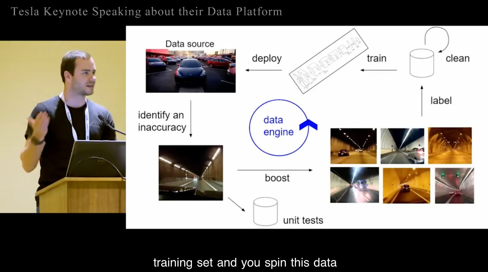
img_resource/3-2-1_Tesla_close_loop.png, 저장소 Apache-2.0). 원 저작권은 Tesla에 있다. 크기만 줄임.2026년의 플라이휠은 단계는 같고 부품이 바뀌었다. 아래 표의 "단계" 열은 2.2절의 번호(①~⑨)이고, 각 행은 그 단계에서 쓰는 부품이 어떻게 바뀌었는지다.
| 2.2절 단계 | 무엇을 하는 일인가 | 2021년 전후 | 2025~2026년 | 무엇이 달라졌나 |
|---|---|---|---|---|
| ①③ 고칠 상황 찾기 | 플릿이 겪은 수백만 장면 중 모델이 틀린 상황과 그 비슷한 장면을 찾아내는 일 | 사람이 조건을 코드로 쓴 트리거(Tesla 221개)로 차 안에서 걸러 낸다 📰 | 임베딩 검색: 영상마다 내용을 요약한 숫자 목록(임베딩)을 붙여 두면 뜻이 비슷한 영상은 숫자도 비슷해진다. "비 오는 밤 공사 구간" 같은 글을 같은 방식으로 숫자로 바꿔 가까운 영상을 찾는다. NVIDIA Cosmos Dataset Search는 약 800만 영상으로 학습한 영상-텍스트 임베딩 모델(Cosmos-Embed1)을 쓴다 📰; Voxel51 FiftyOne 📰 | 무엇을 찾을지 미리 코드로 정해 두지 않아도 되고, 트리거에 안 걸린 장면도 나중에 찾을 수 있다 |
| ④ 라벨링 | 영상에 정답(물체 위치·차선·궤적)을 붙이는 일 | 사람 라벨링 회사(Scale AI, 인력 24만 명) 📰; Tesla는 2022년 자체 라벨팀 감원 📰 | 파운데이션 모델 자동 라벨링: NVIDIA Cosmos Curator가 "처리·주석·필터·중복 제거"를 맡고 🔍 (Cosmos README), Cosmos Reason 같은 시각언어모델이 "왜 이렇게 운전했나"까지 글로 붙인다 📰 | 라벨 비용이 사람 수가 아니라 GPU 시간에 비례 |
| ⑥ 장면 재현 | 기록된 상황을 다시 돌려 새 모델을 시험하는 일 | 로그 재생 + HIL(dSPACE 리플레이 시스템) 📰 | 3D 재구성: Waymo Block-NeRF는 사진 280만 장으로 샌프란시스코 한 구역(0.5km²)을 35개 신경 모델로 재구성 📰 (arXiv 2202.05263); NVIDIA NuRec은 3D 가우시안 스플래팅으로 주행 로그를 다시 걸어 다닐 수 있는 3D 장면으로 만든다 📰 | 기록된 그대로만이 아니라 "그때 왼쪽으로 꺾었다면"을 볼 수 있다 |
| ⑤⑥ 장면 생성 | 겪어 본 적 없는 상황을 만들어 학습·시험에 쓰는 일 | 사람이 시나리오 파일(OpenSCENARIO)을 작성 📰 | 생성형 월드모델: Wayve GAIA-3(150억 파라미터, 10배 데이터) 📰 (Wayve); Waymo World Model(Genie 3 기반) 📰; NVIDIA Cosmos 📰 | 본 적 없는 상황을 영상으로 만들어 낸다 |
| ⑤ 학습 | 모델을 고치는 일 | 기록된 주행을 흉내 내는 모방학습(개루프) | 폐루프 강화학습·학습된 시뮬레이터: NVIDIA AlpaGym은 시뮬레이터 안에서 정책이 스스로 운전하며 배운다 📰; openpilot 0.11은 "학습된 시뮬레이터로 전량 학습" 🔍 | 모델이 자기 실수의 결과를 겪으며 배운다 |
| ⑥ 평가 | 새 모델이 좋아졌는지 재는 일 | 기록 궤적과의 거리(ADE/FDE 같은 규칙 지표) | 사람 선호 지표: Waymo WOD-E2E의 RFS 📰; LLM-as-judge(일반 플라이휠) 🔍 | "기록과 같은가"에서 "사람이 보기에 좋은가"로 |
| ⑧ 배포 | 새 모델을 차에 내보내는 일 | 연 단위 대형 릴리스(Tesla v13 → v14까지 약 1년) 📰 | 주 단위 OTA(v14.x는 1~2주 간격) 📰 (보도) | 루프 한 바퀴가 짧아짐 |
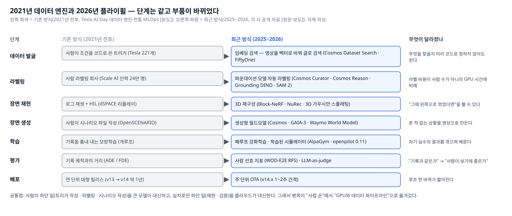
바뀐 부품들의 공통점은 하나다. 사람이 하던 일(트리거 작성, 라벨링, 시나리오 작성)을 큰 모델이 대신하고, 실차로만 하던 일(재현, 검증)을 클라우드가 대신한다. 그래서 한 바퀴의 병목이 "사람 손"에서 "GPU와 데이터 파이프라인, 그리고 시뮬레이션을 얼마나 믿을 수 있는가"로 옮겨갔다. 플라이휠을 평가하는 잣대는 세 변수로 요약된다 — 한 바퀴를 얼마나 자주(주기), 얼마나 싸게(바퀴당 비용), 얼마나 믿을 수 있게(검증 신뢰도) 돌리느냐. 다음 네 절의 병목은 이 세 변수 중 하나 이상을 막는 곳이고, 각 해법도 같은 잣대로 평가하면 된다.
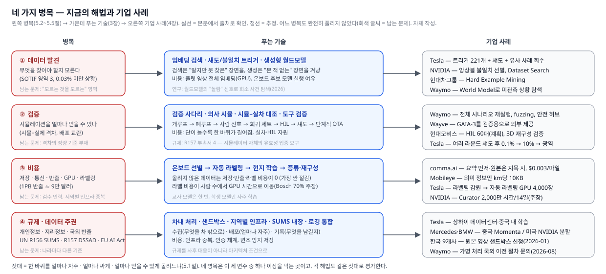
5.2 병목 ① 데이터 발견 — 무엇이 필요한지 모른다
정의. 가장 어려운 데이터는 "아직 본 적 없어서 찾을 줄도 모르는" 데이터다. ISO 21448(SOTIF)은 이를 "모르는 불안전 시나리오(영역 3)"라고 부르고, 이 영역을 합리적 노력으로 최대한 줄이는 것을 표준의 핵심으로 둔다 📰 (TÜV SÜD 백서).
왜 생기나. 희소성은 숫자로 드러난다. Waymo는 수억 마일 플릿에서 발생 빈도 0.03% 미만 상황을 골랐는데 12시간 분량이었다 📰. 플릿이 아무리 커도 드문 조합은 몇 번 안 나온다. 트리거는 "미리 정한 조건"이므로 정하지 않은 상황은 걸리지 않고, 불확실성 기반 능동학습도 초기 라벨 집합에 아예 없는 클래스("unknown unknown")를 잡지 못한다 📰 (해설).
해법과 비용.
| 해법 | 무엇을 겨냥하나 | 비용·조건 | 한계 |
|---|---|---|---|
| 임베딩·자연어 검색(3.2절) | "알지만 못 찾은" 장면 — 트리거에 안 걸렸지만 비슷한 장면 | 플릿 영상 전체를 임베딩해 두는 GPU 비용(Cosmos Curator 기준 2,000만 시간에 Blackwell 14일 📰) | 검색어를 아는 상황만 찾는다 |
| 모델 불일치·섀도 트리거(3.1절) | 현행 모델과 후보 모델(또는 앙상블)이 갈리는 순간 | 온보드에 후보 모델을 같이 돌릴 추론 여유 | 두 모델이 같이 틀리면 못 잡는다 |
| 생성형 월드모델(3.3절) | "본 적 없는" 조합 — 플릿이 못 본 상황을 만들어 시험 | 월드모델 학습·추론 비용, 만든 장면의 현실성 검증(5.3절) | 무엇을 만들지는 여전히 사람이 정한다 |
| 월드모델의 "놀람" 신호(연구) | "무엇을 모르는지 모르는" 영역 — 예측 월드모델이 다음 장면을 못 맞히는 순간을 희소 사건으로 본다 | 온보드 또는 오프라인에서 예측 모델을 계속 돌려야 한다 | 2026년 연구 단계 📰 (arXiv 2608.29772) |
기업 사례. Tesla는 트리거 221개와 섀도 모드에 더해 틀린 사례를 단위 테스트로 남기고 비슷한 사례를 플릿에서 회수(boost)한다 📰. NVIDIA는 모델 앙상블의 불일치로 고른 데이터가 수동 선별보다 야간 보행자 3배·자전거 4.4배 개선됐다고 보고했고(연구), Cosmos Dataset Search로 글 검색을 제공한다 📰🔍. 현대차그룹은 Hard Example Mining으로 오인식·판단 곤란 상황을 자동 선별한다 📰. Waymo는 World Model의 목적에 "플릿이 직접 관찰한 적 없는 상황 탐색"을 명시하고, WOD-E2E로 0.03% 미만 상황만 모은 데이터셋을 공개했다 📰. Voxel51은 페타바이트급 플릿 로그에서 임베딩·자연어 검색으로 엣지 케이스를 캐는 도구를 판다 📰.
요약하면 검색은 "알지만 못 찾은" 데이터를, 생성은 "본 적 없는" 데이터를 겨냥한다. 둘 다 "무엇을 모르는지 모르는" 영역은 못 잡으므로, 월드모델의 놀람 신호 같은 발견 기법이 다음 과제다. 온보드에서 후보 모델을 같이 돌리는 섀도·불일치 트리거는 차량 HPC 자원에 걸린다(5.6절).
5.3 병목 ② 검증 — 시뮬레이션을 얼마나 믿을 수 있나
정의. 시뮬레이션이 검증의 주 수단이 됐지만(2.3절 차이 5), 시뮬레이션에서 좋은 점수가 도로에서의 안전으로 이어진다는 보장이 없다. 시뮬레이터 자체를 검증해야 하는 문제다.
왜 생기나. 개루프 점수는 허약하다. nuScenes 개루프 평가에서 카메라·라이다 없이 과거 궤적만 외삽해도 최신 모델을 이기는 사례가 보고됐다 📰. 정적 데이터셋 점수가 도로 안전과 다른 것을 재고 있다는 뜻이다. 재구성·생성 장면은 기록 범위 밖에서 품질이 떨어지고, 생성 장면은 물리적으로 그럴듯한지 따로 확인해야 한다(3.3절). 그리고 2026년 5월 Bench2Drive-Robust는 프레임 드롭·GPS 잡음·추론 지연 같은 "배포 교란"이 폐루프 성능을 크게 떨어뜨리는데 기존 이미지 손상 평가로는 잡히지 않는다고 보고했다 📰 (arXiv 2605.18059).
해법과 비용.
| 해법 | 내용 | 비용·조건 | 근거 |
|---|---|---|---|
| 검증 사다리(3.4절) | 개루프 → 유사 폐루프 → 사람 선호 → 시뮬 폐루프 → 회귀 세트 → HIL → 섀도 → 단계적 OTA. 각 단이 이전 단이 못 보던 것을 본다 | 단이 늘수록 한 바퀴가 길어진다. 어느 단을 생략할지가 설계 문제 | 🔍📰 |
| 의사 시뮬레이션 | NAVSIM v2는 3D 가우시안 스플래팅으로 후속 관측을 합성해 폐루프 시뮬과 상관 0.89를 얻으면서 환경 상호작용을 6배 줄였다 | 폐루프 시뮬보다 싸지만 상관 0.89는 "같다"가 아니다 | 📰🔍 (NAVSIM) |
| 시뮬–실차 대조 | 같은 시나리오를 시뮬과 실차(또는 HIL)에서 돌려 결과를 맞춘다. Waymo는 사고 재구성 시나리오를 fuzzing하고 기준 모델(NIEON)과 비교 | 실차·HIL 자원. 현대모비스는 시뮬레이터 60대로 "1만 시간을 1주일에"(계획) | 📰⚠️ |
| 도구 검증(규제 요건) | 시뮬레이터가 재현하는 범위·시나리오 유효성·물리 시험과의 상관을 제조사가 입증 | 시뮬레이터 하나마다 검증 문서가 필요 | 📰 |
규제는 시뮬레이션 증거를 조건부로 받는다. UN R157(자동 차선 유지) 부속서 4는 시험장·실도로에서 재현하기 어려운 시나리오에 시뮬레이션 사용을 허용하되, 제조사가 도구의 범위·해당 시나리오의 유효성·물리 시험과의 상관을 입증하도록 한다 📰 (TÜV SÜD 해설). EU의 완전자동화차량 형식승인 규정 2022/1426은 시나리오 기반 평가와 가상 시험을 허용하고 "시뮬레이션 기반 시험의 신뢰성 평가" 지침을 담는다(조문 원문 미확인 ⚠️) 📰. 미국은 2026년에 AV 프레임워크 갱신·FMVSS 개정안·Zoox 면제로 "규제 장벽 제거" 방향이다 📰.
기업 사례. Waymo는 새 소프트웨어마다 전체 시나리오를 재실행하고 사고 시나리오를 fuzzing하며, 기준 모델(NIEON) 대비 회피율을 비교하고, 플릿 통계(안전 허브)로 시뮬 결과를 실도로 결과와 맞춘다 📰. Tesla는 여러 라운드의 섀도 배포로 시뮬 대신 실제 운전자·환경에서 대조하고 플릿 0.1% 미만부터 단계적으로 확대한다 📰⚠️. Wayve는 GAIA-3를 검증용으로 외부에 제공해 시뮬레이터 자체를 검증받는 방향이고 "합성 테스트 기각률 5배 감소"를 주장한다 📰⚠️. 현대차그룹·모비스는 실주행 데이터를 3D로 재구성해 위험 상황을 재현하고 모비스 HIL(60대 계획)로 실차 센서 데이터와 대조한다 📰⚠️. NVIDIA는 AlpaSim(센서 렌더러·정책·물리·평가 분리)과 Cosmos Evaluator(물리 정확성 자동 점수)로 생성 장면의 현실성을 채점한다 📰🔍. 학계의 2025년 12월 자율주행 테스트 서베이는 "코너 케이스 다양성, 시뮬–실제 격차, 체계적 기준 부재, 파운데이션 모델 테스트 비용"을 미해결로 지목한다 📰 (arXiv 2512.11887).
요약하면 시뮬레이션은 증거가 될 수 있지만, 시뮬레이터 자체를 검증했다는 증거를 함께 내야 한다. 월드모델 기반 검증이 규제 증거로 인정받으려면 R157 부속서 4의 "도구 검증" 요건이 관문이다(5.6절).
5.4 병목 ③ 비용 — 저장·통신·GPU·라벨링
정의. 한 바퀴를 도는 데 드는 돈이다. 데이터를 올리고(통신), 쌓고(저장), 꺼내고(반출), 정답을 붙이고(라벨링), 학습·시뮬하는(GPU) 비용의 합이다.
| 항목 | 공개된 수치 | 근거 |
|---|---|---|
| 데이터 양 | 개발 차량 1대가 8시간에 200TB 이상, 소규모 시험 플릿이 하루 페타바이트급 | 📰⚠️ (Introl) |
| 저장 | "단일 모델 학습에 100~500PB, 장기 저장비 연 1,000만~2,000만 달러 이상"(제3자 투자 자료 인용) | 📰⚠️ |
| 클라우드 반출(egress) | AWS $0.09/GB, Azure $0.087/GB, GCP $0.12/GB(2026). 1PB 반출 ≈ 9만 달러 | 📰 (CloudZero) |
| 라벨링 | 3D 큐보이드 개당 $0.121부터, 2D 박스 $0.036부터; 교차로 프레임 약 $4.84 vs 고속도로 $0.48(10배) | 📰⚠️ (업계 가이드) |
| 자동 라벨링 절감 | Bosch "3D 박스당 비용 최대 70% 절감" | 📰⚠️ (Bosch) |
| 학습 인프라 | Tesla 2026 설비투자 250억 달러 이상, XPeng 학습비 20억 위안 이상 | 📰⚠️ |
| 실패 비용 | VW가 Bosch 얼라이언스에 약 15억 유로 투자 후 조기 종료 | 📰 |
왜 생기나. 원본 데이터 양이 통신·저장 비용을 밀어 올리고(3.1절), 라벨링은 사람 수에 비례했으며, 클라우드에서 데이터를 꺼낼 때마다 반출비가 붙는다. 데이터 주권 규제(5.5절)는 지역별로 인프라를 중복시킨다.
해법과 절감 순서. 첫째, 온보드 선별(3.1절)이다. 올리지 않은 데이터는 저장·반출·라벨링 비용이 모두 0이므로 가장 싼 절감이다(openpilot 두 단계 업로드 🔍, Mobileye km당 10KB 📰). 둘째, 자동 라벨링(3.2절)이다. 라벨링이 사람 수에서 GPU 시간으로 옮겨가며, Bosch의 "3D 박스당 최대 70% 절감" 주장이 맞다면 남는 비용은 검수 인력과 GPU다 📰⚠️. 셋째, 반출 최소화·현지 학습이다. 1PB 반출이 약 9만 달러이므로 데이터가 있는 곳에서 학습하면 반출비와 규제 비용을 함께 줄인다 📰 (CloudZero). 넷째, 증류·재구성으로 GPU 효율화다. 교사 모델은 한 번 학습하고 학생만 자주 학습하며, InstantNuRec은 장면 재구성을 약 1.5초로 줄였다 🔍📰.
기업 사례. comma.ai는 요약 로그·저화질 영상을 우선 올리고 원본은 서버 지목 시에만 올려 마일당 $0.003 미만으로 서비스 비용을 맞춘다 🔍📰. Mobileye는 원본 영상을 올리지 않고 의미 정보만 km당 10KB로 전송한다 📰. Tesla는 2022년 사람 라벨팀을 감원하고 자동 라벨링(GPU 4,000장)으로 옮겼으며, 중국 데이터는 상하이에서 현지 학습한다 📰⚠️. NVIDIA는 Cosmos Curator로 2,000만 시간을 14일에 처리한다고 주장하고, Cosmos Transfer 증류 모델은 36스텝을 1스텝으로 줄였다 📰🔍. 반대 사례로 VW는 Bosch 얼라이언스에 약 15억 유로를 투자한 뒤 조기 종료해 자체 구축의 실패 비용을 보여 줬다 📰.
비용 최적화의 순서는 온보드 선별 → 자동 라벨링 → 반출 최소화(현지 학습)다. 이는 3.1절의 두 단계 업로드와 5.5절의 데이터 주권 대응과 같은 방향이며, 첫 항목은 차량 HPC 플랫폼의 로깅·압축 설계에 걸린다(5.6절).
5.5 병목 ④ 규제와 데이터 주권
정의. 규제가 플라이휠의 세 단계를 직접 건드린다. 수집(개인정보·지리정보·국외 반출), 배포(UN R156 SUMS), 기록(R157 DSSAD·EDR). 2.3절의 차이 4·6이 이 병목이다.
| 지역 | 규정 | 플라이휠에 미치는 영향 |
|---|---|---|
| EU | GDPR + EDPB 커넥티드카 가이드라인(차량 데이터 대부분을 개인정보로 간주, 차내 처리 권고) 📰; Data Act 2025-09-12 적용, 2026-09-12부터 설계 의무(사용자가 데이터에 직접 접근) 📰 (Mayer Brown); AI Act 부속서 I(형식승인 대상 안전 부품의 AI) 의무는 2028-08-02로 12개월 연기 📰 | 수집 동의·익명화 비용, 제3자 데이터 개방 의무, 안전 부품 AI의 문서화 |
| UNECE(64개 체약국) | R155(사이버보안 관리체계)·R156(소프트웨어 업데이트 관리체계) — 2024-07부터 신차 전체 📰; R157 DSSAD 기록 의무 📰 | OTA가 "관리 프로세스"가 됨(RxSWIN·무결성·이력), 로깅이 의무가 됨 |
| 중국 | 2026-01-30 8개 부처 "자동차 데이터 국외 이전 보안 가이드라인(2026판)": 연구개발·자율주행·소프트웨어 업그레이드 시나리오별 중요 데이터 식별, 보안 평가·표준 계약·인증, 로그 3년 보관 📰 (China Briefing) | 외국계 OEM은 중국 데이터로 중국 안에서만 학습(Tesla 상하이 데이터센터) |
| 한국 | 2026-01 개인정보위: 규제 샌드박스로 안전 조치 시 자율주행차·로봇의 원본 영상(비식별 없이) 활용 허용, 9개사 신청; "자율주행 영상처리장치" 정의, 접근 기록·삭제 의무 신설 📰 (머니투데이) | 얼굴을 가리면 인식 학습이 안 되는 문제를 샌드박스로 풀기 시작 |
| 미국 | 2025-04 AV 프레임워크, 2026-01 AV STEP 철회, 2026-03 FMVSS 개정안, 2026-07 Zoox 면제 📰 | 배포 장벽 완화, 대신 충돌 보고(SGO) 의무 유지 |
왜 병목인가. 얼굴·번호판을 가리면(비식별) 사람·차를 인식하는 학습에 쓸 정보가 사라지고, 국경을 넘지 못하면 지역마다 학습 인프라를 따로 둬야 하며, 업데이트마다 인증 절차가 붙는다. 규제를 지키는 방법 자체가 비용(5.4절)이 된다.
해법과 비용.
| 해법 | 내용 | 비용·조건 |
|---|---|---|
| 차내 처리·요약 전송 | 원본 영상 대신 차 안에서 뽑은 의미 정보만 올린다(EDPB 권고 방향) | 온보드 연산·모델; 영상 기반 학습 데이터는 못 얻는다 |
| 규제 샌드박스·법제화 | 안전 조치를 조건으로 원본 영상 학습을 허용받는다 | 접근 기록·삭제 의무 등 관리 체계 |
| 지역별 인프라 | 데이터가 있는 나라에 저장·학습 인프라를 둔다 | 인프라 중복, 모델 변형 관리 |
| SUMS 프로세스화 | R156 요건(RxSWIN·무결성·호환성·기록)을 배포 파이프라인에 내장한다 | 인증 체계 구축, 배포 주기 하한 |
| 로깅 통합 | 규제용 기록(DSSAD·EDR)과 개발용 트리거를 한 파이프라인으로 만든다 | 변조 방지 저장·시간 동기화 |
기업 사례. Tesla는 중국 데이터를 상하이 데이터센터·중국 내 학습 인프라에서만 처리하고 데이터 안전 검사를 외자 최초로 통과했다 📰. Mercedes·BMW는 중국 모델은 Momenta, 미국·글로벌은 NVIDIA·Qualcomm으로 공급 구조를 지역별로 분할했다 📰. Mobileye는 의미 정보만 전송하는 REM으로 개인정보·반출 문제를 설계로 회피하고 📰, Baidu는 폐쇄루프 그림의 수집 단계에 "탈민감화"를 명시했다 📰. 한국에서는 9개사가 개인정보위 규제 샌드박스로 원본 영상 학습을 신청했고(2026-01) 📰, Waymo는 한국 사고·사건 장면을 가명 처리해 국외 연구개발에 쓰는 절차를 개인정보위에 문의했다(2026-08) 📰 (머니투데이 2026-08).
규제는 사후 대응이 아니라 아키텍처 조건이다. 수집 단계는 "무엇을 차 밖으로 내보낼지"를, 배포 단계는 "얼마나 자주 바꿀 수 있는지"를, 기록 단계는 "무엇을 남길지"를 정하며, 셋 다 온보드 설계에 걸린다(5.6절).
5.6 향후 진화 방향
세 층으로 본다. (a) 기술 방향 여섯 가지와 성숙도, (b) 병목별로 본 다음 5년의 해법, (c) 그 가운데 차 안에 걸리는 것 — 차량 HPC 플랫폼 관점.
5.6.1 기술 방향 여섯 가지와 성숙도
| # | 방향 | 무엇이 바뀌나 | 사례 | 성숙도(2026-09) |
|---|---|---|---|---|
| 1 | 월드모델 기반 검증이 표준이 된다 | 로그 재생·수작업 시나리오 → 월드모델이 만든 반사실 장면으로 시험. 관건은 규제가 그 장면을 증거로 받는가 | Wayve GAIA-4(AI Driver 인더루프), NVIDIA Cosmos Transfer·NuRec, Waymo World Model(라이다 동시 생성), Huawei 클라우드 월드모델, XPeng X-World 📰 | 양산 진입. 규제 증거화는 R157 부속서 4 "도구 검증"이 관문 |
| 2 | 학습된 시뮬레이터 안에서 직접 학습한 모델이 양산차에 실린다 | 모방학습 → 시뮬레이터 안 폐루프 강화학습. 시뮬레이터 자체가 학습된 월드모델 | comma 0.11이 첫 공개 사례 🔍, NVIDIA AlpaGym·Momenta R7·Waymo 교사-학생 구조 📰 | 초기 양산(comma), 나머지는 발표·"초기 개발 단계" |
| 3 | 플릿 간 데이터 공유가 실험 단계를 지난다 | 한 회사의 플릿 → 여러 회사·국경 안 데이터 공간 | TIER IV Co-MLOps(택시 회사·Astemo), Catena-X 중–유럽(2026-11), NVIDIA 1,700시간 오픈 데이터, Waymo WOD-E2E 📰 | 실험. 데이터 주권 규제가 오히려 "국경 안 공유"를 밀어 올린다 |
| 4 | 에이전트가 플라이휠을 돌린다 | 사람은 요구사항만, 라벨링·정제·학습·평가는 AI 에이전트 | TIER IV 주장 📰⚠️, NVIDIA OSMO(코딩 에이전트 연동으로 재구성·큐레이션 자동화) 📰 | 주장 단계 |
| 5 | 파운데이션 모델이 라벨링을 줄인다 | VLM이 차종·치수를 추론해 3D 박스 초깃값을 만들고, VLM을 "라벨 생성기"로 써서 가벼운 검출기를 학습 | NVIDIA Cosmos Reason·Alpamayo 인과 추론 자동 라벨링, Waymo 교사 모델 📰🔍 | 도구 공개, 검수 인력은 남는다 |
| 6 | 로깅이 규제 증거가 된다 | 개발용 트리거와 규제용 기록이 같은 이벤트(개입·전환 요구·최소위험기동)를 찍으므로 한 파이프라인으로 | R157 DSSAD, EU EDR 의무(2024-07), 2022/1426의 L3 이상 데이터 저장, 중국 로그 3년 보관, 한국 접근 기록 의무 📰 | 이미 의무 |
여섯 방향 중 ①②⑤는 기술 성숙도의 문제이고, ③④는 아직 주장 단계이며, ⑥은 이미 의무다. 우선순위는 ⑥(로깅 통합) → ①(월드모델 검증) → ②(학습된 시뮬레이터) 순이 합리적이다.
5.6.2 병목별로 본 다음 5년의 해법
| 병목 | 지금의 해법(5.2~5.5) | 다음 5년에 기대되는 것 | 남는 문제 |
|---|---|---|---|
| ① 데이터 발견 | 임베딩 검색, 섀도·불일치 트리거, 생성 | 온보드에서 임베딩·소형 VLM을 돌려 "이 장면이 드문가"를 차 안에서 판단(온디바이스 큐레이션); 월드모델의 놀람 신호로 "모르는 것을 모르는" 영역 탐색 📰⚠️ | 온보드 연산 여유, 놀람 신호의 오탐 |
| ② 검증 | 검증 사다리, 의사 시뮬, 실차 대조 | 월드모델이 규제 증거가 된다(도구 검증 방법의 표준화); 시뮬레이터를 외부에 공개해 검증받는 방식(Wayve GAIA-3) 확산; 배포 교란(지연·프레임 드롭)까지 포함한 벤치마크 | 시뮬–실제 격차의 정량화 기준 부재 📰 |
| ③ 비용 | 온보드 선별 → 자동 라벨링 → 현지 학습 | 라벨 비용이 GPU 시간으로 완전히 이동; 증류로 학생 모델만 자주 학습; 재구성 시간 초 단위(InstantNuRec) → 재구성 시뮬이 로그 재생만큼 싸진다 | 검수 인력, 지역별 인프라 중복 |
| ④ 규제·주권 | 차내 처리, 샌드박스, 지역별 인프라, SUMS, 로깅 통합 | 샌드박스 → 법제화(한국 "자율주행 영상처리장치" 정의); 국경 안 데이터 공간(Catena-X); 가명 처리 데이터의 국외 이전 기준(Waymo 문의가 선례) | 나라마다 다른 기준, 모델 변형 관리 |
5.6.3 차량 HPC 플랫폼 관점 — 온보드가 준비해야 할 것
9단계 중 ①②⑦⑧⑨는 차 안에서 돈다. 위 방향 가운데 온보드에 걸리는 것을 이 보고서의 근거에서 추리면, 지금 필요한 다섯 가지와 앞으로 더해질 세 가지다.
| # | 요구 | 왜 필요한가 | 근거 |
|---|---|---|---|
| 1 | 섀도 실행 자원 | 현행 모델과 후보 모델을 동시에 돌려야 불일치 트리거(5.2절)와 섀도 검증(5.3절)이 된다 | Tesla 섀도 모드 📰 |
| 2 | 선별·압축·두 단계 로깅 | 요약 로그 + 저화질 영상 + 원본 지목 업로드는 저장·통신 예산과 온보드 인코더를 전제로 한다(5.4절) | openpilot 🔍 |
| 3 | 규제 기록의 무결성 | DSSAD·EDR·R156 버전 식별·이력은 변조 방지 저장과 시간 동기화를 요구한다(5.5절) | 📰 |
| 4 | HIL 재생 호환 | 원시 센서·버스 데이터를 실제 ECU에 시간 맞춰 주입하려면 플랫폼의 입력 경로가 재생을 지원해야 한다(5.3절) | dSPACE, 현대모비스 📰 |
| 5 | OTA 관리 프로세스 | R156의 SUMS·RxSWIN 요건은 업데이트 경로의 설계 조건이다(5.5절) | 📰 |
| 6 | (앞으로) 온디바이스 큐레이션 연산 | 임베딩·소형 VLM을 차 안에서 돌려 드문 장면을 차 안에서 고르면 업로드 비용이 더 줄지만, 추론 자원이 더 든다 | ⚠️ 추정(5.6.2) |
| 7 | (앞으로) 교사-학생 증류 모델의 실행과 안전 감시 | 학습된 시뮬레이터 안에서 배운 학생 모델이 실차에 실리면, 시뮬–실제 격차를 런타임에서 감시하는 모니터가 필요하다 | Waymo 교사-학생 📰, comma 0.11 🔍, ⚠️ 추정 |
| 8 | (앞으로) 지역별 모델·데이터 변형 관리 | 데이터 주권으로 지역마다 다른 모델·로깅 정책이 실리면, 같은 플랫폼에서 변형을 식별·관리해야 한다 | Tesla 상하이, Mercedes CLA 분할 📰, ⚠️ 추정 |
플라이휠은 클라우드만의 일이 아니다. 첫 단계(선별·섀도)와 마지막 단계(OTA·규제 기록)는 차 안에 있고, 향후 방향(온디바이스 큐레이션·증류 모델·지역별 변형)은 온보드 요구를 더 늘린다. 차량 HPC 플랫폼이 이 여덟 가지를 지원하지 않으면 플라이휠의 시작과 끝이 막힌다.
용어 풀이
- 데이터 플라이휠: 서비스를 쓰면서 나온 데이터로 모델을 고치고, 고친 모델이 더 좋은 데이터를 만드는 반복 구조. 자율주행에서는 "데이터 엔진", "폐쇄루프"라고도 부른다.
- 종단간(end-to-end, E2E): 카메라 영상이 들어가면 조향·제동이 바로 나오는 하나의 학습 모델. 중간에 사람이 짠 규칙이 없다.
- 롱테일(long tail): 각각은 드물지만 종류가 무한히 많은 예외 상황. 빈도 그래프의 긴 꼬리.
- 분포 변화(distribution shift): 학습할 때 본 상황의 분포와 실제로 만나는 상황의 분포가 다른 것. 도시·날씨·나라가 바뀌면 생긴다.
- 파국적 망각(catastrophic forgetting): 새 데이터로 다시 학습한 모델이 예전에 잘하던 것을 잊는 현상.
- 트리거(trigger): 차 안에서 "이 순간의 데이터를 저장·업로드하라"고 판단하는 조건. 규칙, 모델 점수, 사람 버튼이 있다.
- 섀도 모드(shadow mode): 새 모델을 차에 싣되 제어권은 주지 않고, 그 판단을 기록해 현행 모델·운전자와 비교하는 방식.
- 자동 라벨링(auto-labeling): 클라우드의 큰 모델이 미래 프레임과 여러 주행을 합쳐 정답(박스·차선·궤적)을 만드는 것.
- 임베딩(embedding) / 임베딩 검색: 영상이나 글의 내용을 요약한 숫자 목록. 뜻이 비슷하면 숫자도 비슷하게 나오도록 학습해 두므로, 글로 검색어를 넣어 숫자가 가까운 영상을 찾을 수 있다.
- Hard Example Mining: 모델이 틀리거나 판단을 어려워한 상황을 자동으로 골라 우선 학습에 쓰는 기법. 현대차그룹이 플라이휠의 선별 기술로 명시했다.
- 교사-학생 증류(distillation): 크기 제한 없는 큰 모델(교사)을 먼저 학습시키고, 차에 실을 작은 모델(학생)이 그 출력을 따라 배우게 하는 방법.
- SUMS / UN R156: 소프트웨어 업데이트 관리체계. 제조사가 업데이트 관리 체계를 인증받고, 버전마다 식별 번호(RxSWIN)를 붙이며, 호환성 확인·안전 설치·기록을 요구하는 UN 규정.
- 재생 / 재구성 / 생성: 합성 데이터의 세 갈래. 기록을 그대로 틀기 / 기록을 3D로 복원해 다른 시점에서 보기 / 조건을 주고 없던 영상을 만들기.
- 3D 가우시안 스플래팅(3DGS): 장면을 수백만 개의 작은 타원체(가우시안)로 표현해 빠르게 다시 그리는 3D 재구성 기법.
- 월드모델(world model): 지금 장면과 행동을 주면 다음 장면을 예측·생성하는 모델. 시뮬레이터로 쓰인다.
- 개루프 / 폐루프 평가: 기록 궤적과의 거리만 재기 / 시뮬레이터 안에서 실제로 운전시켜 결과를 재기.
- PDMS / RFS: NAVSIM의 유사 폐루프 점수 / Waymo의 사람 평가자 선호 점수.
- HIL(Hardware-in-the-Loop): 실제 제어기(ECU)에 기록·합성 센서 데이터를 주입해 시험하는 방법.
- OTA(Over-the-Air): 무선으로 차량 소프트웨어를 갱신하는 것. UN R156이 관리 방식을 규정한다.
- DSSAD / EDR: 자율주행 시스템의 켜짐·꺼짐·개입을 기록하는 장치 / 사고 순간 데이터를 기록하는 장치.
- SOTIF(ISO 21448): 고장이 없어도 기능의 한계 때문에 생기는 위험을 다루는 안전 표준.
- RxSWIN: UN R156이 요구하는 형식승인 관련 소프트웨어 식별 번호.
미확인 항목
| # | 항목 | 상태 |
|---|---|---|
| 1 | RAND 보고서의 "88억 마일·400년" 같은 세부 표 수치 | 2.75억·110억 마일만 검색 요약으로 확인 |
| 2 | UN R156 조항 원문, EU 2022/1426 가상 시험 조문 | 원문 접근 실패, 해설로만 확인 |
| 3 | Tesla 수치 전반(221 트리거, 1.5PB, 500만 시간 → 12시간, Cortex GPU 수, 롤아웃 비율, 140억 마일) | 회사 발표·팬 사이트 전언, 독립 검증 없음 |
| 4 | Tesla 10초 클립의 크기, HW4 시간당 20GB | 커뮤니티 추정 |
| 5 | Cosmos Curator "2,000만 시간/14일" | 뉴스룸 수치, README에는 처리량 없음 |
| 6 | DSSAD 저장 규격("2,500 타임스탬프/6개월" vs 초기안) | 판본별 상이 |
| 7 | 현대모비스 60대·주당 1만 시간 | "계획" 표현 |
| 8 | Wayve GAIA-3 "기각률 5배 감소", 506개 도시·43% | 회사 주장 |
| 9 | Momenta "26개 OEM", "two legs" 원문 | 확인된 것은 24개 OEM(2026-02) |
| 10 | Waymo "200억 시뮬 마일"(2026 시점), 컴퓨트 지출 | "수십억"만 확인 |
| 11 | Mobileye REM 일일 매핑 km(2025~26) | 800만 대·"일 수백만 km"만 확인 |
| 12 | Applied Intuition "Data Explorer", 현대모비스 "S-CORE" 명칭 | 검색에서 미확인 |
| 13 | AWS×NVIDIA AV 3.0 블로그 본문 | 요약만 확인. 아키텍처 다이어그램은 별도 확보해 그림 8로 수록 |
| 14 | 라벨 단가·검수 비율 | 벤더 블로그 기반 범위 |
| 15 | "트리거 → 배포 X주" 같은 한 바퀴 소요 시간 | 어느 회사도 공개하지 않음 |
| 16 | 현대차그룹 플라이휠의 라벨링·검색 도구, NVIDIA 트랙과 Atria 트랙 사이의 데이터 공유, 700만 대 판매망의 실제 수집 범위 | 미디어데이 보도로만 확인, 공식 페이지 접근 불가 |
| 17 | Momenta·Mobileye가 OEM 양산차에서 회수하는 데이터의 범위·계약 조건 | 비공개 |
| 18 | Tesla "신경망 시뮬레이터 → 강화학습" 루프(2026 보도), Waymo 교사-학생 구조의 세부 | 팬 사이트·보도 요약, 원문 미열람 |
출처
전체 출처 목록(URL·등급·확인한 사실·접근 실패 목록)은 reference/references.md에 있다. 그림 출처는 reference/images.md에 있다. 2판(2026-09-30)에서 추가한 출처는 references.md 끝의 "개조식 보고서 2판 추가 출처" 표에 있다(두 판 공통). 1차로 직접 읽은 저장소는 다음과 같다. NVIDIA-AI-Blueprints/data-flywheel, commaai/openpilot(RELEASES.md·README와 로깅 코드 5개 파일), LincanLi-X/Awesome-Data-Centric-Autonomous-Driving, NVIDIA/Cosmos, nvidia-cosmos/cosmos-curate·cosmos-reason2·cosmos-transfer1·cosmos-predict2, NVIDIA-Omniverse-blueprints/cosmos-dataset-search, NVIDIA/instant-nurec, nv-tlabs/3dgrut, graphdeco-inria/gaussian-splatting, NVlabs/alpagym·alpasim, voxel51/fiftyone, IDEA-Research/GroundingDINO, facebookresearch/sam2, autonomousvision/navsim, Thinklab-SJTU/Bench2Drive, tier4/data_recording_system·scenario_simulator_v2, autowarefoundation/autoware-documentation.
openpilot 코드 인용(3.1절 두 단계 업로드)은 커밋 521db4c(2026-09-20, 전체 SHA 521db4c825d3…)의 다음 파일을 직접 읽은 것다: openpilot/system/loggerd/loggerd.h(1분 세그먼트·영상 압축·저화질 카메라), openpilot/system/loggerd/uploader.py(요약본 우선 업로드·용량 상한·종량제 처리), openpilot/system/athena/athenad.py(서버 지목 시 원본 업로드·재시도), openpilot/system/loggerd/deleter.py(저장 공간 부족 시 삭제·운전자 표시 구간 보존), openpilot/cereal/services.py(요약 로그에 넣을 신호와 비율). 저장소가 openpilot/ 패키지 디렉터리 아래로 재구성돼 있어 경로에 이 접두사가 붙는다(초판 표기에서 누락, 2026-10-02 보정). 링크: loggerd.h · uploader.py · athenad.py · deleter.py · services.py.